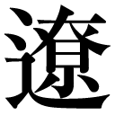

| 消せない告白 おいしいコーヒーのいれ方 Second Season III | |
| 村山由佳 | |
| (2011) | |
集英社ｅ文庫
消せない告白
おいしいコーヒーのいれ方 Second Season III
村山由佳
この本は縦書きでレイアウトされています。
また、ご覧になる機種により、表示の差が認められることがあります。
〈主な登場人物〉
和泉勝利
大学３年生、陸上部。年上のいとこ、かれんと付き合っているが、彼女が転職したことから遠距離恋愛に。
花村かれん
介護福祉士になるため、教師を辞めて鴨川の老人ホームで働いている。
原田政志
強面だが世話好きの、陸上部のよき先輩。
星野りつ子
大学の陸上部マネージャー。勝利に想いを寄せている。
森下裕恵
勝利が借りているアパートの大家の奥さん。
森下秀人
裕恵の夫の実弟。オーストラリアで文化人類学の研究をしている。
マスター
喫茶店『風見鶏』のオーナー。かれんの兄。
〈前巻までのあらすじ〉
高校３年生になろうという春休み。父親の九州転勤と叔母夫婦のロンドン転勤のために、勝利は、いとこのかれん・丈姉弟と共同生活することに。５歳年上の彼女をいつしか愛するようになった勝利は、かれんが花村家の養女で、彼女がかつて慕っていた『風見鶏』のマスターの実の妹だという事実を知る。そんな勝利に、かれんも次第に惹かれていく。二人が恋人同士になったことを、花村の両親はまだ知らない。
大学に進学した勝利は、叔母夫婦の帰国と父親の再婚・帰京を機に、アパートで一人暮らしを始める。一方、かれんは、高校の美術教師を辞め、鴨川の老人ホームで働きながら介護福祉士を目指す。自立しようというかれんを応援しながらも、勝利の心は、離れて暮らす不安にたびたびさいなまれた。
ある日、アパートの大家の弟が、オーストラリアから一時帰国する。彼の飾らない人柄に好感を抱く勝利だったが......。
おいしいコーヒーのいれ方 Second Season III
消せない告白
More Than A Feeling
１
災難というものは突然ふりかかるからこそ災難なのであって、たいていの場合、僕らにはその事態に対応しうるだけの準備なんか出来ていない。
その日。
僕は朝練で久々に――ほんとうに久々にまともな距離を跳び、ものすごく昂揚していた。後輩たちの手前、いちおう平然とした態度を保っていたものの、ほんとうは着地したとたん叫びだしてしまいそうなくらい嬉しかった。いちいち測ってみるまでもなく、相当の距離を跳んだことは滞空時間と耳もとを切る風の感じでわかっていた。
長いトンネルだった。それを、耐えて、堪えて、やっとのことで一条の光が見えるところまでたどりついたのだ。
まるでヘリウムガスを詰めた風船みたいな気分だった。世界に手に入れられないものなど何もない！ とでもいうような無闇やたらな万能感が体じゅうを満たしていた。
そのせいで、よけいに無防備というか、要するに脇がガラ空きになってしまっていたのは否めない。
アパートの大家の森下裕恵さんから携帯に連絡があったのは、その日の午後、ゼミの真っ最中だった。さすがに出られなかったので、何ごとだろうと終わってから急いでかけ直すと、
『ごっめぇん。たいした用事でもないのに煩わせちゃって』
裕恵さんは、あの独特の色っぽい喋り方で言った。
『じつはね、晩御飯のお誘いなの。今晩うち、もうぜったい焼肉ってきめたんだけど、よかったら和泉くんも食べに来ない？ 手みやげは缶ビール三本でいいから』
たいした用事じゃないどころか、おそろしく魅力的な誘いだった。
にもかかわらず僕が即答するのをためらっていると、
『あら。何か用事？』と裕恵さんは言った。『たしか今日はバイトの日じゃなかったはずよねえ？』
「や、それはそうなんですけど......」
『もしかして、焼肉きらい？』
「ンなわけないじゃないですか」
『あ、わかった』裕恵さんの声に笑みが混じった。『うちの人と差し向かいでお肉つつくのが気詰まり？』
う、と返答に困った僕に、裕恵さんは笑いだしながら言った。
『だったら安心して。うちの人、今夜は留守なの。でもほら、おじいちゃんと義弟と私の三人でお肉囲んでもイマイチ楽しくないじゃない？ それであなたを誘ってみようかって、これは秀人さんが言いだしたことなんだけど』
「秀人さんが？」
『そう。ほら、今月末には彼もあっちへ帰っちゃうから。その前に和泉くんと、もっといろいろ話してみたいんだって』
「そこまで言われたら遠慮する気もなくなりますね」
僕が言うと裕恵さんは、
『なーに言ってんの、最初からそんな気ないくせに』
からかうように言って電話を切った。
裕恵さんの言う「あっちへ帰っちゃう」の〈あっち〉とは、すなわちオーストラリアのことをさしている。彼女の旦那さんの実弟である秀人さんは、考古学と文化人類学の研究者で、数年前から現地でチームに加わり、先住民アボリジニの研究をしているのだ。
僕がいま借りているアパートの一室は、もとはといえば秀人さんが住むために用意された部屋だった。彼がさっぱり日本へ戻ってくる様子がないおかげで、僕がいまだに安く長く借りられているというわけなのだ。
裕恵さんの運転するジムニーに半ば無理やり乗せられ、空港まで秀人さんを迎えにいくのにつき合わされたあの日。
いざ目の前に現れた彼は、まったくもって冗談みたいにインディ・ジョーンズそのまんまの姿だった。ムチこそ振りまわしてはいなかったけれど、それ以外はカウボーイハットといい、革のジャケットといい、叩けば埃の立ちそうなジーンズといい、ほとんどコスプレかと思うくらいだった。
でも、何より印象的だったのはその目だ。まるきり人見知りをしない赤ん坊みたいな、どこまでも無垢で透きとおった好奇心まるだしの目をしていて、僕としては初対面だというのに彼を丸ごと受け容れる気になっている自分自身にびっくりしたほどで......。つまり、森下秀人というのはそんなふうな男なのだった。多くを語らなくても、そこにいるだけで周りに自分を認めさせてしまう。存在そのものが雄弁、というタイプだ。
裕恵さんの愛車ジムニーの助手席は、秀人さんのサイズにはまったく合っていなかった。縦にも横にも規格外の体を申し訳なさそうに縮こまらせながら、久しぶりの日本に興味津々で窓の外を眺めている様子がユーモラスだった。
帰りの道々、ほんの一時間かそこら言葉をかわしただけで、僕は彼のことをなおいっそう好きになっていた。いざ話せばものすごく博識かつ知的でありながら、しょっちゅう冗談なんだか本気なんだかよくわからないことばかり言ってこちらを煙に巻く。何もかもをどこ吹く風と受け流すようでいて、裕恵さんを見る目は真摯な思いやりに満ちている。
海外暮らしの長い秀人さんだから、そういう態度は裕恵さんに対してだけじゃなく女性全般に対しても同じと考えることだってできるのだろうけれど、僕にはどうしてもそれだけとは思えなかった。小柄な裕恵さんをうんと上のほうから見おろす彼のまなざしには、隠しきれない（というより隠す気もない）情愛があふれていて、言葉や態度の端々に、彼女をとても大切に思っていることが滲み出るのだ。無責任を承知で言うが、すぐそばで見ている第三者からするとそれは、兄の妻に対してまずいんじゃないのかとかいう常識すらも超えてしまって、いっそ感動的ですらあった。
缶ビール三本と言われたところを、近くのコンビニで半ダース買って森下家を訪ねた。僕とよく将棋をさす耳の遠いおじいちゃんは、居間にある家具調こたつを前にどっかりとあぐらをかき、ひとの顔を見るなり、
「あとで一局......」
と言いだして、裕恵さんにたしなめられていた。こう言っては何だけれど、長男である裕恵さんの旦那さんがいないほうが、おじいちゃんは堂々として家長らしく見える。
「旦那さん、今日はどこへ？」
と訊くと、
「新宿って言ってたかな。なんか、学生時代に仲の良かった友だちが出張で上京してるとかでね。当時の仲間で集まることになったみたい」
あんまり詳しくは聞いてないけど、と裕恵さんは言った。
「いいんですか。留守の間に」
「え、どういう意味？」
「せっかく焼肉やるんなら、旦那さんが家にいる日に、家族水入らずでやったほうがよかったんじゃないですか」
「ああ、そういう意味。いいのよ、そんなの。うちってほら、家族水入らずだと会話がはずまないし」
「はあ」
返答に困ることを言わないでほしい。
「それにあのひと、お肉ってあんまり食べないしね」
裕恵さんが二階に声をかけると秀人さんが下りてきて、まずはビールで（おじいちゃんだけは最初から日本酒で）乾杯となった。
「お肉、余っちゃっても困るんだから遠慮しないで食べてよね」
膝立ちになってホットプレートに牛脂のかたまりを塗りつけながら裕恵さんが言った。
「いったいどれだけ買い込んだんですか」
と面白そうに秀人さんが言う。
「そりゃあもうたっぷりよ。冷蔵庫に入りきらないくらい」
「はああ？ なんだってそんなに」
「しょうがないじゃない。いまだに育ち盛り食べ盛りの学生さんと、冬眠からさめたばっかりの熊みたいな食欲魔人の両方を満足させなきゃいけないんだもの」
「はは、義姉さん相変わらずだなあ」
「何よ、それ。あ、お義父さん、それまだ焼けてないわよ」
「このひとはねえ」と、これは僕に向かって秀人さんは言った。「昔っから、真ん中ってものがないひとでね」
「あ、なんかわかる気がします」
と僕は言った。
「お、わかる？」
「何であれ、やる時ゃとことんって感じですもんね。逆に、自分の気が乗らなきゃ人に何を言われても絶対動かなさそうだし」
「そうそう、そうなんだよね」
「あんまり後先考えないっていうか、要するに極端っていうか」
「あははぁ、よく見てるねえ和泉くん」
「ちょっとそこ、勝手に二人で盛りあがらない！」
と裕恵さんが割って入る。
「ったく、何なのそれ。あんたたち、ひとのこと全然わかってないんだから。私のどこが極端なのよ。万事控えめじゃない。こんなに中庸を重んじる人間もいないわよ」
ぽんぽん言い返しては、肉を次々に焼いて僕らの皿に配っていく。
「あのね、義姉さん。中庸って言葉の意味わかってますか」
「うるさいなあ。ほらもう、いいからとっとと食べちゃってよ。焼きすぎたらせっかくのカルビがまずくなるじゃない」
「せっかくの？」
僕が訊き返すと裕恵さんは、そうよ、と胸を張った。
「せっかくみんなで食べるんだからと思って、一番高いやつ張りこんじゃったんだからね」
「万事控えめが聞いてあきれるよね」
と、秀人さんが笑った。
愉しい食事だった。
長い時間をかけて、ずいぶんたくさん食べたし、飲みもして、それぞれがたっぷり喋った。おじいちゃんまでもよく笑った。
ふだん、家では一人で自炊するか、せいぜい隣の幸太のぶんも作って一緒に食べるかといった程度だから、外食以外でこんなふうにみんなして食卓を囲むのは久しぶりだった。花村の家で暮らしていた頃なら当たり前だったことが、今ではよほどの幸運に恵まれないと手に入らないものになっている。
花村家で焼肉をした時のことを思い浮かべると、僕は胸のあたりがきゅうっとなってしまった。
肉の焼き方にも性格が表れるらしい。かれんがあんまりおっとりと一枚一枚ていねいに焼くものだから、丈が面白がってちょうど食べ頃のを横から次々にかっさらい、そうするとかれんは、
〈んもう、待ってよ、ちっとも食べられないじゃないー〉
などと文句を言いながらも、さして怒ることなくまた新しい肉を大事に焼き始めるのだった。
「和泉くんは、将来何になりたいとか考えてる？」
食後のお茶を飲んでいる時だ。
秀人さんに訊かれて、僕は首を横にふった。
「正直、まだ全然。これっていうものが何も見つからなくて焦ってるとこです」
「いや、焦ることはないんじゃないかと思うけどね。そういうのってほら、ある日突然、出合い頭みたいに見つかることが多いものだし。......じゃあさ、オーストラリアへは行ったことある？」
「ないですね。オーストラリアに限らず、海外へはまだ一度も」
「そうか......」
「和泉くんの歳ならそっちのほうが普通なのよ」と裕恵さんが言った。「あなたみたいなのは稀」
「秀人さんみたいなのって？」
「こいつはなあ」と、おじいちゃんが横から引き取る。「夏休みに自転車で九州まで出かけて、それだけでは足りんで韓国へまで渡ろうとしおってなあ」
「しかも、密航でよ」と裕恵さんが口をはさむ。「出港前に見つかって未遂に終わったそうだけど」
「ありゃ高校の時だったか？」
「いや、たしか中二か中三でしたよ」
秀人さんは申し訳なさそうに首をすくめて言った。
「高校生だったら、さすがにもうちょっと分別ついてたでしょう」
「ふん、どうだか」
と裕恵さん。
「それでね、高校の頃からバイト、バイトでお金貯め始めて、大学生になったとたん、長い春休みの間じゅう海外ばっかり行ってたんですって。ね？」
「最初がインドだったかな」
と、おじいちゃんが言った。
「ネパールです」
と秀人さん。
「何たらいうボランティア団体の世話になって」
「世話になったわけじゃないですよ。向こうじゃ俺もせっせと井戸掘りましたから」
「そのあとは、どこだ。ブータンだったか」
「スーダンです」
「似たようなもんだ」
「いや、全然、」
「ええい。いちいちうるさい、どこでもええわい。まったく、こっちはそんなことのために大学へ行かせた憶えはなかったんだがなあ」
「いわば実地研修ですよ。机の上じゃ学べないことを、自分の足で学びに行ってただけです」
「そういうえらそうなことは、きちんと大学を四年で出てから言え」
「何年通ったんですか」
と僕が訊くと、
「ぎりぎりセーフの八年で卒業」秀人さんはにっこり笑って言った。「親を泣かせるのも申し訳ないんで、なんとか帳尻合わせて卒業だけはしたんだけどね」
「はん。ありがたい思いやりだわな。おかげさまで八年間、涙ちょちょぎれるほど泣かされて、スネどころか骨の髄までしゃぶられたワ」
「いや、どうもすみません」
秀人さんは小さくなった。
でも、そんなふうに言うおじいちゃんの口調は決して深刻なものではないのだった。言葉だけはきついことを言いながらも、この破天荒な末息子が可愛くてしょうがないといった様子が目尻の皺に表れていた。
「じつは、僕の親しくしている人のお父さんが、ちょうど秀人さんと同じような生き方をした人で」
と、僕は言った。
「やっぱり大学に八年だか通って、その人の場合はとうとう卒業できずにやめちゃったそうですけどね。でも、旅先のインドだかで出会った女性と結婚して、すごく幸せな家庭を作ったみたいです。夫婦ふたりとも、小さい子どもを遺して交通事故で亡くなっちゃったんですけど」
「ああ、それは気の毒に」と秀人さんが言った。「残念だな。そういう人なら会ってみたかったのに」
「息子にだったら会えますよ。いま、光が丘の駅前商店街のはずれで喫茶店をやってるんです。めちゃくちゃ美味いコーヒーを淹れてくれる」
「へえ。光が丘か。行ってみようかな」
「ぜひ。......で、何が言いたいかというと、そのマスターがですね。亡くなった両親のことを話すとき、ものすごく懐かしそうな目をするんですよ。当のお父さんは親戚じゅうから変わり者だとか言われて白い眼で見られてたみたいですけど、それでもマスターにとってはそんなの関係なくて、とにかく〈最高の親父〉だったんです。その親父さんもおふくろさんも、どこか浮世離れした人たちだったから、家の中はいつでも旅の途中みたいだったって言ってました」
「旅の途中？」
と裕恵さん。
「ええ。自分の家にいてもなんだか旅の宿みたいで、たとえば明日思い立ってまたどこかへふらりと旅立ってもぜんぜん不思議はない、みたいな感じですかね。子ども心に、そういうのがちょっと不安でもあり、エキサイティングでもあり、とにかく退屈だけはしなかったって」
「なるほどねえ」
「でもほら、子どもの頃に刷り込まれたことって、後々まで深層心理みたいな部分に影響するものじゃないですか。そのせいかどうか、マスターは四十も近くなった今に至るまで、いまだにずーっと旅の途中だっていう気分が抜けないんだそうです。自分の人生に対して現実感とか当事者意識が薄いっていうか。ほかの人たちが何の疑問もなく一箇所に根をおろせることのほうが不思議に思えるって」
マスターからそんな話を聞いたのは、じつはつい最近だった。例によって店の客が途切れている時で、たまたま由里子さんも居なかった。
あるいは、あえて居ない時を選んだのかもしれない。僕にそうやって話したあとで、マスターはめずらしく照れくさそうに頬を歪めて付け加えた。
〈つまりな。奇妙に聞こえるかもしれないが、由里子やおなかの子どもは、俺にとっては錨みたいなものなんだ。これでようやく俺も落ち着けるって気がする〉
――と。
「それって、錨、なの？ 港とかじゃなくて？」
と裕恵さんが湯呑みを片手に訊く。
「ええ。だって港ってのは、旅してきた船が帰る場所でしょ。そうじゃなくて、錨なんだって。つまり、自分がここではないどこかへふらふらと漂っていっちゃわないように、ちゃんと一箇所につなぎとめてくれる存在ってことなんじゃないですか。自由は失うかもしれないけど、そのかわり安心は得られるからって言ってました」
「うーん、ものすごくシンパシーを感じるなあ、その人に」と、秀人さんが言った。「やっぱり会ってみたいな。光が丘まで行けばわかるかな」
「わかると思いますよ。『風見鶏』っていう名前で、駅前商店街のけっこうはずれのほうですけど、通り沿いで外観も目立ってるから」
よかったら僕が案内しますけど――と、そう言った時だ。
がらがらがらと、店のほうで横引きのガラス戸が開く音がした。
「あらやだ。帰ってきちゃった」
裕恵さんが、反射的に浮かしかけた腰を、思い直したようにまた落とす。
みんなが黙ってしまったなか、やがて足音が廊下を近づいてきた。
居間の入口に立った旦那さんへ、
「こんばんは。すいません、お邪魔してます」
僕はことさらに明るく挨拶をした。
「......ああ、どうも」
頷くだけに近い頭のさげ方をして、けれど旦那さんはこたつの上を見るなり眉間にしわを寄せた。
眼がどんよりしている。早く帰ってきたわりには、すでに相当の量を飲んでいるみたいだ。
「......なんだ、これ」
と、彼は言った。
「お帰りなさい。早かったのね」
裕恵さんがふつうの声で言う。
「和泉くんがビール持って寄ってくれたから、今夜は焼肉にしたの」
事実とは順序が違っているが、もちろん反論や訂正は差し控えた。
「......焼肉？」
と、旦那さんが唸った。
「あなたのぶんも残してあるわよ」
「......俺の、留守に、焼肉？」
「だってあなた、お肉あんまり食べたがらないじゃない」
「......わざわざ、俺の留守に？」
「まあ、座れ」と、おじいちゃんが言った。「ビールでも持ってこいや」
旦那さんは返事をしない。
「おなかはどう？」と裕恵さん。「ちゃんと食べられた？」
「.........」
「すいてるんだったら、あなたのぶん焼くけど。お肉がいやなら、お茶漬けか何か作ろうか？」
「.........」
「飲みものはビール？ それとも、あなたもポン酒にする？」
「.........」
「ほら、兄貴。まあ座りなよ」
たまりかねて秀人さんが言ったとたん――旦那さんの肩のあたりの空気が一気にぐわっとふくれあがるのが見えた気がした。
「お前が言うな！ 誰の家だ！」
怒号が響く。
どれだけ酔っているか思い知らされる大声に、けれど裕恵さんはわずかに眉根にしわを寄せ、おじいちゃんも顔をしかめただけだった。こういうのには慣れているってことなんだろうか。
しかし客としては、こんな時どういう態度でいればいいのかわからない。それが一番困る。まあまあ落ち着いて、などと宥めにかかるのは出過ぎた真似というものだろうし、かといって、じゃあ俺そろそろ、といきなり腰を上げるのも角が立つ気がする。角が立つも何もすでにガチガチに立ちまくっているのだけれど、それに拍車をかけてしまいそうで、身動きどころか息をするのもはばかられる。
仕方なく焼けすぎた肉の残骸を眺めていると、裕恵さんの手がひらりと動いてホットプレートのスイッチを切った。
「もう、デザートにしようか」誰とも目を合わさずに言った。「あなたも、ほら、座って。好きでしょ、メロン。冷やしてあるから美味しいわよ」
旦那さんは何か言いかけたように見えたが、結局、口をつぐんだ。
そのまま二階へ上がってしまうかと思ったのに、黙ってこちらへ来て、薄い座布団を敷いてある椅子に座る。裕恵さんの向かい側、おじいちゃんの隣。食事の間もぽつんと空いていた彼の席だった。
僕だったらこういう時、どうするだろう。旦那さんとしてはこれ以上ことを荒立てるのは大人げないと判断したのか、酔っていて行動に脈絡がなくなっているだけなのか、それとも......そんなにメロンが好きなのか？
そういえば、左隣に座った旦那さんの、下の名前を知らないことに気づく。裕恵さんが呼ぶのを聞いたことがない。いつも、〈ねえ〉とか〈あなた〉だ。
僕にしても、〈大家の森下さん〉以外知る必要がなかったといえばそれまでだが、おじいちゃんの名前は知っているし（外の表札に出ている）、秀人さんのほうは初対面から〈秀人さん〉だったのにな、と思ってみる。この家で僕が名前を知らないのが旦那さんだけだ、ということが何を象徴しているとかいないとか、賢しらに言うつもりもないのだけれど。
裕恵さんが立ちあがって、テーブルの上のものをさげ始めた。ちょっと重いホットプレートをどかすのを秀人さんが手伝いそうになったのを見て、
「あ、それくらいやります」
僕はあわてて腰を浮かせた。妻と弟が仲睦まじく片づけなんかしたら、旦那さん――森下さんがまた何を言いだすかわからない。
「いいのよ、お客さんは座ってて」
「いや、ご馳走になったんですからこれくらい」
コンセントを抜き、まだ載っていた肉とか野菜を皿に取って、ホットプレートを流しのほうへ運ぶ。じゃあとりあえずそこへ置いといてくれる、と裕恵さんに言われるとおり、配膳台を兼ねたカウンターワゴンの上へおろしたとたん、
「お前はなんで座ってるんだよ」
後ろで森下さんが言った。
しまった。裏目に出たか。
「客に働かせといて、お前は何ふんぞりかえってんだ」
いや......きっと裏目も何もないんだろう。今の彼には、誰が何をしてももれなく業腹なのだ。
「いいんですって」と割って入る。「俺、一人でばくばく肉食い過ぎちゃったから、せめて体で返さないと」
「だいたい、何だその態度。ええ？」
聞いちゃいなかった。
「ったくデカい面しやがって。ここ何年ろくに連絡もよこさないで、ひょっこり帰ってきたかと思えば上げ膳据え膳で。お前、何様だ。え？ 何様のつもりだ。その歳にもなって、親父に金の心配までしてもらって恥ずかしくないのか」
「――べつに」
と、秀人さんが言った。僕と裕恵さんが立っているところからは背中しか見えなかったけれど、静かな口調だった。
「俺のやってる仕事は、たしかに全然儲からないさ。それを承知で好きでやってるんだから、道楽だと言われても仕方ないとは思うよ。だけど、何も世間に顔向けできないことをしてるんじゃない、大事な研究をしてるんだし、」
「誰にとって大事だって言うんだ。俺はなあ、お前ら研究者を名乗る人種の、そういう傲慢さが鼻についてたまらないんだよ。やれナンタラ行動学だ、ナンタラ人類学だ、それがいったい何の得になる。そんなことしてる暇があるなら、日雇いのバイトでもして自分の食い扶持くらい自分で稼いでみろっていうんだ。海の向こうのどうでもいい奴らの文化なんか、お前が研究しなくたって世の中の誰も困りゃしない」
「いやなことを言うね」
秀人さんが初めて、尖った声を出した。
「食い扶持がどうとかはともかく――兄さんは、自分の大事にしている人たちを他人から『どうでもいい奴ら』って言われたらどう思うわけ」
「はっ。俺は他人かよ」
「そういうことじゃなくて、」
「ナントカいう先住民は大事で、俺は他人扱いか」
「だから、そういうことを言ってるんじゃないだろう！」
裕恵さんの肩が、びくりと揺れた。
さっきの森下さんの声のほうがもっと大きかったのに、今はダイニングとの間の柱をつかむ指先に力が入って白くなっている。
「とにかく」
と、秀人さんは続けた。
「学問や研究を損得でしか考えられない人に何を言う気にもなれないけどね。俺は、この仕事をしていく以上、家族を養う余裕はないとわかってるから身一つでいるんだ。たしかに好きなことはしてるけど、そのために女房子どもを飢えさせてるわけじゃあるまいし、金がないことを恥ずかしいとは思わないね」
「それで親父に迷惑をかけてもか」
「そりゃ父さんに心配かけてるのは申し訳ないし、ありがたいとも思ってるよ。だけど、それだって父さんと俺との間のことであって、兄さんは関係ないだろう。いちいちとやかく言われる筋合いはない」
「お前......ふざけやがって」
森下さんがものすごい形相で言った。
「俺は関係ないだと？ ないわけがあるか！」
「やめて」
とうとう裕恵さんが口をはさんだ。
「あなたも、秀人さんもいいかげんにしてよ。お客さんのいる前で、それこそ恥ずかしいとは思わないの？ あなたも、そういう話をするんならお酒の入ってない時にして」
「お前は黙ってろ。俺は酔ってない」
「それのどこが酔ってないって、」
「うるさい、引っこんでろ！ 女が口を出す話じゃない！」
「おい」秀人さんが言った。「なんだよ、それ。あんた、義姉さんにいつもそんな口のきき方してるのか」
と――森下さんの顔つきが変わった。
「それこそ、お前に何の関係がある？」
「.........」
「なんでお前が、俺の女房をかばう？」
「.........」
「お前、恥ずかしくないと言ったな。この御時世に、マンション一件の借り手を見つけるのがどれだけ大変なことか、お前にわかるか」
「......何の話だよ」
「抱えてる物件の七割八割を埋めるのにも苦労するんだぞ。空き物件の赤字が日に日にふくらんでくのを睨んでる時の気持ちがわかるか。今いる店子までいつ解約を言いだすか、いつエアコンの故障だの何だの言いだすか、戦々恐々とする気持ちがわかるか」
「だからそれとこれとどういう......」
「やかましい！ そうやって俺が地道に働いて、毎月やっとの思いで稼ぐ金よりもよほど多い額をなあ、親父はお前のためにならポンと吐きだすんだよ。電話も手紙もめったによこさない、研究とかいう道楽にうつつを抜かしてる息子のためになら、それこそポンとなあ。俺が車を買い換えたくて頼んでも、貸してくれやしなかった親父がなあ」
「車って」
「客を案内する車だよ。俺が楽しむためじゃない、一見の客にこの不動産屋は心配ないと思ってもらうための車だよ。ベンツとまでは言わない、国産車でいいから少しはハッタリをきかせることも必要なんだと言ってるのに――なあ、親父？ あんた、そんなもんは要らないと言ったよな。見栄を張りたいなら自分の金で勝手にやれ。そう言ったよなあ」
「いや、それは......」
おじいちゃんが苦い顔で目をそらす。
「わかった」
と、秀人さんが言い捨てる。
「なら、同じってことじゃないか」
「なんだと？」
「それなら兄さんも俺も同罪だって言ってるんだ」
「同罪？」
「そうだろう。困ったときに親父の金をアテにするっていう意味じゃ同じじゃないか」
「ふざけるな！」
あっと思ったときには手がのびた後だった。中腰になった森下さんがテーブルの向こうから身を乗りだして秀人さんの胸ぐらをつかみ、その右腕を、座ったままの秀人さんがつかみ返す。裕恵さんがふっとんでいって、やめて、と夫の腕を押さえた。
「いいかげんにしろ、馬鹿もんどもが」
おじいちゃんがおろおろと制止するのを無視して、
「お前みたいに......」
奥歯を食いしばっているせいかくぐもった声で森下さんは言った。
「お前みたいにいつまでも親のスネを囓ってる奴と一緒にされてたまるか。俺は、借りた金はちゃんと返す。それが親であってもな。それに比べてお前は何だ、三十もとっくに過ぎて親から小遣いか。それで恥ずかしくないとはよく言えたもんだ」
「ねえ、お願いだからやめてよ。二人ともお酒の入ってない時に、」
「うるさいな！」
乱暴に振りほどかれた裕恵さんがよろけて、ダイニングの引き戸に背中をぶつける。ガシャン、とガラスが揺れてひやりとしたとたん、秀人さんが無言で立ちあがった。胸ぐらをつかまれたままテーブルを回り、こんどは頭ひとつ上から睨み下ろして、兄の胸ぐらをじわりとつかみ返す。
まずい。
「とめて、和泉くん！」
言われるより先に、間に割って入っていた。
「そこまでにして下さいって」
あまり真剣でもあまりいいかげんでも、どちらも逆効果のような気がして、できるだけふだんの声で僕は言った。
「二人とも、落ち着いて下さい。それ以上やっちゃうと、ほんとに引っ込みがつかなくなるから。ね、頼みますって」
大の男二人が怒気を噴き上げながら睨みあう真ん中で、僕はレフェリーという職業を心から尊敬したくなった。
「お願いします」
と繰り返す。
なおも無言の睨みあいがあって、それでも、先に胸ぐらの手をゆるめたのは秀人さんのほうだった。しわくちゃになった襟元から秀人さんの指がするりと抜けていきそうになった、その時だ。
「ったく」唸るように、森下さんが言った。「ひとの女房に色目つかいやがって」
「――なに？」
「とぼけるなよ。俺が気づいてないとでも思ってたのか」
「いや、森下さん、もうやめて下さいって」
「残念だったなあ、秀人。どれだけ待ってようが、俺は裕恵と離婚なんぞしてやらないぞ。そんな体裁の悪いことができるか」
「誰が......」
秀人さんが、再びゆっくりと兄の胸ぐらを取る。今度は両手だ。
「誰がそんな」
「お前だよ、秀人。お前だ。いつもいつも物欲しそうな顔しやがって。親父の金ばかりか、兄貴の女房まで欲しいってか」
「いいかげんに、」
「はっ、違うってのか？ じゃあ言えよ。裕恵に向かって、裕恵の顔を見て、はっきり言ってやれ。義姉さんなんかどうも思ってない、欲しくも何ともないって」
「ちょっともう、やめてったら！」
「言えよ。うん？ なんで言えない？ 裕恵をどうも思ってないなら言えるだろう」
秀人さんは――答えなかった。
兄の襟首をつかむ手に力がこもり、僕が慌てて押さえた両腕に硬い筋がたつ。どんな顔をしているのか、びりびりと張りつめた空気に阻まれて窺い見ることもできない。斜め後ろあたりにいるはずの裕恵さんでさえ息を殺している。
「ほうら見ろ」
と、森下さんが勝ち誇るかのように言った。
「ったくお前は、最低の野郎だよ。人のもんをどれだけ欲しがれば気がすむんだ、ああ？」
森下さん、頼む、その先は。
「正直に言えよ。お前、裕恵とはもう、」
その瞬間。
秀人さんが右手を放し、肘をぐいと後ろに引いた。
押さえていた秀人さんの腕がいきなり後ろへ引かれたせいで、僕が勢いあまって前のめりになるのと、裕恵さんが悲鳴をあげるのが同時だった。
２
そう――災難というのは、まさしく突然襲いかかるから災難なのだ。
薄暗い部屋に敷かれた布団に横たわり、何かの幼虫みたいに体を丸めて、僕は堪えがたい痛みを必死に堪えていた。
ちょっとでも体の力を抜くと呻き声がもれる。顔面全体がぱんぱんに腫れあがっているのがわかる。腫れるというより、ふくれあがっていると言ったほうがいいかもしれない。その痛みの中心に、さらに剣山を突き立てるような鋭い痛みが襲いかかって、脈に合わせてずくん、ずくん、と脳と視神経に響く。いっそ脈そのものを止めてしまいたいほどだ。
森下家の二階の一部屋だった。
頭の下には氷枕。天井の豆電球がひとつついている。
布団を敷いてくれたのはたぶん裕恵さんだと思う。自分のアパートに帰って寝るからいい、などと断る気力さえなかった。謝り続ける秀人さんの肩を借りて運びあげられるなり、僕は文字どおり昏倒した。
いつだったか、『風見鶏』のマスターから聞かされたことがある。家族を引き裂くこととなったあの交通事故の時、ものすごい勢いで突っ込んでくるはずのダンプがスローモーションで見えた、と。
さっきの僕も、ちょうどそんな感じだった。
秀人さんが肘を引いたと同時に、左の視界に森下さんが両腕をあげてガードするのが見え、右の視界からは秀人さんの拳が飛んでくるのが見え、た、のに、どうしてわざわざその真ん中へ頭をあげてしまったのかわからない。おそらくは、たたらを踏んで前へよろけた体を立て直そうとする条件反射だったのだろう。
右の頬骨に拳を食らった。左へふっとび、森下さんにぶつかってもつれるように転がった、ところに――椅子が横倒しになっていた。座面の角が、逃れがたい運命として眼前に迫ってくるのが一瞬のうちにスローモーションで見えた。
とっさに手をつくのも間に合わず、鼻の下をまともにぶつけた。目から火花なんて生やさしいものじゃなかった。顔の骨が粉々に砕けたかと思った。口を押さえた掌が血に染まり、びっくりして気が遠くなりかけた。女と違って男は、こんな大量の鮮血を見慣れていないのだ。
あまりの痛みに気絶することもできずに床で七転八倒していると、舌の上に硬い異物が触れた。吐きだしてみると前歯だった。根もとからぽっきり折れて、掌のくぼみで朱に染まっていた。赤い真珠みたいだった。
そっと歯茎をまさぐる。舌の先が歯茎に触れたとたんに、激痛が足のつま先まで走りおりる。やや左寄りの前歯だ。腫れあがった歯肉の中に、かろうじて残った歯根が埋もれているのはわかるが、どれくらいのところで折れたのか、奥までまさぐる勇気がない。
そろりと布団から手を出し、指先で上唇に触れる。ここも、外側にめくれあがる勢いで腫れているようだ。鼻の下から小鼻の脇、目の下に至るまでぶよぶよと痺れてふくれあがり、痛み以外には感覚がない。まばたきの振動すら耐えがたくて、僕は低く呻き、目を閉じた。
どうやら熱が高いらしい。呼吸が苦しい。
しばらく荒い息をついていると、階段を上がってくる足音がした。ふすまがそっとひらき、廊下の灯りが部屋を照らし、またそっと閉まって暗くなる。
薄く目を開けると、枕もとに裕恵さんが座って覗きこんでいた。ものすごく心配そうな、というかほとんど半泣きの顔だったので、僕はあろうことか笑ってしまい、また激痛に呻くことになった。
「大丈夫？ ......なわけないか」
ささやくように言って、裕恵さんは枕もとの灯りをつけ、僕の腫れた顔を間近でしげしげと見た。そして、
「うわ」
と言った。何が「うわ」かは訊くまでもなかった。
「薬、少しは効いてる？」
正直に首を横にふった。もちろん、数ミリ単位でだ。
「やっぱりお医者さま呼んだほうがいいんじゃない？」
「だいじょうぶです」
自分の耳にも、らいじょうぶれす、に聞こえた。
「氷嚢を持ってきてみたの。氷枕だけじゃ、痛いとこ冷やせないでしょ。でもこれ、載っけるとかえって痛そうね」
僕は、手をだしてそれを受け取った。氷水の詰まったヨーヨーみたいな氷嚢を、とりあえず右の頬にあてがう。
左半面の激烈な痛みの陰に忘れ去られそうだが、秀人さんのパンチをくらった右の頬骨だって、それはそれで痛むのだ。距離が近かったのがかえって幸いして、完全なクリーンヒットとまではいかなかったけれど、秀人さんのもともとの体格はそれを補ってあまりあった。
「ごめんね、和泉くん」
と、裕恵さんが言った。
「こんなことに巻きこんじゃうなんて......。その歯も含めて、怪我の治療費はもちろん全部こちらでもたせてもらうし、出来るだけのことはさせて頂くけど、それくらいで済む話じゃないわよね。ほんっとにごめんなさい」
正座をして、頭をさげる。それでなくても小柄な体が、いつもよりもっと小さく見えた。
「そんなに、謝らなくても」
と僕は言った。
「裕恵さんのせいじゃ、ないじゃないですか」
口を動かすと顔じゅうが痛むし、大きな声を出せば頭に響くものだから、言葉はどうしても不明瞭で切れ切れになる。
「誰のせいでも、ないです。たまたま、間が、悪かっただけで」
我ながら情けないったらない。まるで腹話術師のうわごとみたいだ。
「秀人さんにも、気にしないように、伝えて下さい」
「でも......」
「ほら、あの人、すごく気に、しそうだから」
「まあね。実際めちゃくちゃ落ちこんでたけど」
「やっぱり」
そんなことだろうと思った。
「だけど、いいのよ、それくらいのほうが」裕恵さんは怒ったように言った。「もっと落ちこませてやってもいいくらい。ちょっとは真面目に反省してもらわないと、こっちが困っちゃう」
何をどう困るんだろうなと思ったけれど、それについては黙っておく。
「秀人さんは？」とだけ訊いてみた。「俺、もしかして、秀人さんの寝る部屋、とっちゃったんじゃ」
「いいのいいの、それも。今夜はすぐ先のアパートに適当に泊まってもらったわ。うち、空き部屋には不自由してないから」
冗談とも何ともつかない苦笑いで言う。
「それより、ねえ。明日、学校は大丈夫？」
「大丈夫って」
「どうしても休めない授業とか用事とか、ない？」
「いや......。ああ、部活の日だ」
「無理にきまってるじゃない」
それもそうだ。この状態で跳んだりはねたりしたら、たぶん、死ぬ。痛みだけで確実に死ねる。
「秀人さんがね、お昼前に来て、様子を見てあなたを病院へ連れてくって」
「や、いいっすよ、そんな」
「いいわけないでしょう」
裕恵さんはあきれかえった口調で言った。
「折れた歯の治療は腫れが引いてからになるかもしれないけど、口の中だって切ってるんだし、あんなでっかい男のパンチをくらったんだから念のために脳波とか見てもらったほうがいいかもしれないし」
「んな、大げさな」
「少なくとも消毒とか、化膿止めの注射とか......詳しいことはわかんないけど、ちゃんと処置しとかないと歯茎からバイキンでも入ったらどうするのよ。今よりもっと凄い痛みに、あなた耐える自信あんの？」
「.........」
想像してみた上で、僕は、
「ない、れす」
と呻いた。
「ほらごらん。だからね、おとなしく言うこと聞いて。あなたに断られたら、私たちとしてもどうお詫びしていいかわからなくてかえって困るの。お願い」
僕は、仕方なくうなずいた。今度も数ミリ単位で。
「でも、じゃあ僕からも、秀人さんにひとつ頼みが」
「なに？ この際、なんでも言ってやって」
「明日会っても、謝らないでほしい、って......そう言っておいて下さい」
「ええ？ それは......」
「謝られて、そのたんびに『気にしないで下さい』って答えるの、しんどいんです。いちいち首を横にふるだけでも、あっちこっち痛いし。悪いと思ってくれてるのは、もう充分伝わってるんで......」
眉を寄せて黙っていた裕恵さんがやがて、肩が揺れるほどの息をついて、
「わかったわよ」
と言った。
「明日来たら伝えておくから」
「お願いします」
無理して喋っていたせいで、左顔面の痛みがひどくなってきた。じりじりと体勢を変えようとしたものの、わずかな身動きですら傷に響いて、たまらずに呻くと、裕恵さんは自分が怪我したかのようにつらそうな表情をした。
いつもはぽんぽん威勢がいいだけに、しおらしい裕恵さんというのはずいぶん奇妙に感じられる。奇妙というか、新鮮というか。
秀人さんだったら、たぶんこういう彼女を愛しいと感じるんだろうな、と想像して、僕はちょっとだけどぎまぎした。
「ねえ、和泉くん」
「......はい？」
「ここからはもう、返事しなくていいから、聞くだけ聞いててくれる？」
「......はい」
「だから、返事しなくていいから。うなずく必要もないから」
「.........」
うまく開かない目を片方だけ開けて見あげる僕の前で、裕恵さんの肩がまたゆっくりと上下する。枕もとのスタンドの灯りが斜め下から当たっているせいだろうか、その深刻な顔は何かこう、古い宗教画に描かれた女の人を思わせた。
「最初に、これだけは信じてほしいんだけどね」
「.........」
「秀人さんとは、ほんとに何もないのよ」
「.........」
「あのひとが疑うような疚しいことなんて、ほんとに何もないの」
「.........」
約束どおり、僕は黙っていた。うなずきもしないのだって、言われたとおりにしているだけだった。
それなのに、僕がまるで裕恵さんの言ったことを認めまいとして無言でいるかのように、彼女は一生懸命になって言葉を継いだ。
「そりゃあ、最初から私のことを義姉さん義姉さんって呼んで慕ってはくれたけど、それは単に、おかあさんが亡くなって以来ここの家族がずっと男ばっかりだったからで、あくまでも家族として歓迎してくれただけの話で、それを言うならお義父さんだって初めからすごく可愛がってくれたし......」
「.........」
「私たち夫婦だって、結婚してから何年かは普通にうまくいってたのよ。あのひととは、学生時代に知りあったの。同じゼミの先輩でね、当時はそこそこ明るい人だったのよ。うーん、明るいっていうのは言い過ぎか。まあちょっと気むずかしいところはあるにせよ、少なくとも理由もなく腹を立てたりする人じゃなかった。たまぁーにふらっと秀人さんが帰ってきても、『ほんとにお前は昔から......』とか、『これから先いったいどうするつもりなんだ』とかブツブツ小言を言いながらも、まあ兄としてちゃんと親身になってあげてたと思うし、なんだかんだ言ってもけっこう仲のいい兄弟だったのよ」
それが、どうして。
僕の表情が読めたのだろうか、裕恵さんはやりきれない微笑を浮かべた。
「何年目の夏だったかな。一度、三人で国立競技場へサッカーを観にいったことがあったの。たしか、新聞屋さんか誰かにたまたまチケットをもらったんだった。それで、帰りに食事して、ビヤホールで飲んで、カラオケまで行って」
裕恵さんは、くすりと笑った。
「秀人さんてばね、じつはものすごい音痴なの。ガラスが割れるんじゃないかってくらいの音痴。しかも本人はあんまり自覚がないみたいで。私が言ったって内緒よ、これ」
「.........」
「歌いながらもまた飲んで、うちのひとはほら、お酒に強くないからずいぶん酔っぱらっちゃってね。帰りの電車で座るなりぐうぐう寝ちゃって、二人の真ん中に座った私はずっと秀人さんと喋ってた」
「.........」
「楽しかったな」
僕の掛けた布団の胸のあたりをぼんやり見下ろしながら、裕恵さんはつぶやいた。
「ちょっと楽しすぎて、それこそ疚しくなるくらいだった。何でもないことを話してるのに、なぜだか気持ちが昂揚するのよ。共通の趣味があるとか、読んだ本や観た映画が同じだとかってわけでもないのに、何を話してても面白いの。相手が次に何を言うか、全身を耳にして待ちかまえちゃう感じ。しかも相手のほうもまったく同じように感じてるってことがびんびん伝わってくるの。思い過ごしなんかじゃなくて、それが手にとるようにわかるのよ。そういう感じって、経験ある？」
「.........」
「ごめん、今のは私が悪かったわね」
裕恵さんは言った。
「うなずかなくていいんだってば、痛いでしょ？――そう......和泉くんも経験あるならわかると思うけど、そのとき私、ものすごくどきどきして......同時に、ああまずいなって思った。今は酔っぱらったせいにできるからいいとしても、明日の朝起きて、彼に対して同じように感じたとしたら、それはかなりまずいことだわよ、って」
それきり裕恵さんは少しのあいだ口をつぐんだ。たぶん、その翌朝のことを思い浮かべていたんだろう。
「何てことなかったわよ」
わずかに小さくなった声で、裕恵さんは言った。
「次の日、あのひとは二日酔いで朝ごはんに起きてこられなくて、しょうがないからお義父さんと秀人さんと私の三人で食卓を囲んで......べつに全然、どきどきなんかしなかった。逆に、その三人でいるのが当たり前で自然に思えるくらいでね。でも......」
白い喉が、何かを飲みくだすように動く。
「そのあまりの自然さが、私にはかえってショックだったの。だって、夫と囲むふだんの食卓より、この三人のほうがずっとリラックスできて幸せで......こっちの組み合わせのほうが正しいんじゃないかって思えちゃったんだもの」
「.........」
「そのときわかったの。ああ、自分は、絶対に気がついちゃいけないことに気がついてしまったんだ、ってね。ほら、あるじゃない、エデンの園の話。善悪を知る木の実を食べて楽園を追放されたイヴは、こんな気持ちだったんじゃないかと思ったわ。人間、何でも知ればいいってものじゃない。なかには気がつかずにいたほうが幸せなことだってあるのよ、きっと」
僕は、右頬にあてていた氷嚢をそっと左側へ移動させた。話に聞き入るあまり長く同じところにあてすぎていたせいで、顔の右半面の感覚がなくなっていた。
「それからたったの二日で、秀人さん、オーストラリアへ帰っていったの」
と、裕恵さんは言った。
「ほんとはもう少し長く日本にいられるはずだったのに、急に現地の教授から連絡があって帰らなきゃいけなくなったとか言いだして......。まったく、ごまかすにしたってせめてもう少しくらいマシな言い訳があるでしょって感じ」
僕が目で問うと、裕恵さんは情けなさそうに頬をゆがめた。
「だってそんなの、うちの電話の着信記録見れば一発でわかるじゃない。海外からの着信なんて一つもありゃしない。秀人さん自身も携帯なんて持ってなかったし。もう、はなからバレバレ」
「.........」
「でもね、そうして彼が急にこの家から離れようとしたことで、私は逆に確信しちゃったの。ああ、彼も同じなんだなって。彼もやっぱり、このままここにいたらとてもまずいことになるとわかったんだなってね」
今度のだんまりは長かった。日本からオーストラリアまでの距離を彷彿とさせるくらい長かった。
薄明かりのなか、足もと側の壁に、古びた四角い時計が掛かっているのが見える。銀色の秒針が、なぜか五時の位置から七時くらいの間の約十秒間だけ、チッ、チッ、チッ、と硬い音をたてながら動いていく。
沈黙に耐えかね、
「旦那さんは、いつから？」
禁を破って訊いた僕を、裕恵さんはべつに咎めなかった。
「何が？」
「だから......」
「ああ、つまり、いつからあんなふうに疑いだしたのかってこと？」
うなずく代わりにまばたきしてみせる。
「わかんない。はっきりとはね」
裕恵さんは、ゆっくり首を横にふった。
「たぶん、長い間のうちにちょっとずつ積もり積もっていったものなんだろうと思うわ。折々に感じてたんじゃない？ たとえばお義父さんとあのひとが秀人さんのことで言い争うたびに、私、なだめようとしてつい秀人さんをかばうようなこと言っちゃってたし......オーストラリアからかかってきた電話でも、これまたつい楽しく話しこんじゃうとか、帰ってくればきたで、アボリジニのお料理教わったり、チャイの淹れ方を教わったり、逆に私が餃子の作り方を伝授しちゃったり......ね」
「それくらい」
「うん。一つひとつは『それくらい』かもしれないけど、そういうのが何年分も溜まれば結構な嵩になっていくわけよ。あと、あのひとにしてみると、私が秀人さんに対してはほとんど遠慮しないことも不満だったみたい。私としては年下の義弟だからと思って自然に選んでいたつもりの気安い口調が、あのひとの耳には、必要以上に親密に聞こえたみたいなの。私があのひとを大事にしなくちゃと思って穏やかに話しかけても、義弟にはしない遠慮を自分にだけするのかって不機嫌になっちゃうし。実際、あのひとといる時よりも、秀人さんといる時のほうが、私、確実によく笑ってるし。こういうのって難しいわね。いろんなことへの解釈が、一度そういうふうにねじ曲がってすれ違っちゃうと、もう駄目。なかなか元へは戻らない」
「......よく笑うのは」
「え？」
「秀人さんといて、よく笑うのは、裕恵さんだけじゃ、ないじゃないですか。おじいちゃんだって」
「――そうね。ふふ、確かにそうだけど。でも、そこはほら、親子の間のことで、私がそうなるのとはまた意味合いが別でしょ？ だからって、あのひとだけが悪いんじゃないのよ。私もきっと無神経だったんだろうと思う。あの兄弟がお互いにコンプレックスを抱きあってるのはわかっていたはずなのに、そのぎりぎりの均衡を崩すようなことしたのは私だから。......お義父さんに申し訳ないわ」
「ってか、あのおじいちゃんこそ......」
「うん？」
「――いえ」
裕恵さん以上に、あのおじいちゃんこそ、率先して息子たちの間の「ぎりぎりの均衡」を崩すようなことをしてるじゃないか。故意にではないにせよ、もう少しくらい下の息子への贔屓ぶりを隠してみせることだってできたんじゃないのか。
そう言いたかったけれど、やめた。そんなことくらい、裕恵さんのほうがそばで見てよくわかっているはずなのだ。
僕の言おうとしたことを汲み取ったのだろう、裕恵さんはなだめるように微笑んだ。
「まあね。要するに、人間なんてどこまでも不完全で未熟ってことなんでしょうよ。お義父さんだって、ある面ではたいした人格者だけど、別の面ではすごく弱いでしょ。いくら歳を重ねていたって、どんなに長く親をやっていたって、上手に出来ないことはあるものなのよ。私が、いつまでたっても上手にあのひとの妻をやれないのと同じ。......なぁんて言うと、自己弁護に聞こえちゃうかな」
「.........」
「っていうか、自己弁護以外の何ものでもないわよね、これ。ああ、やだな。ごめん、今の忘れて」
早口にそう言った裕恵さんは、これまで見たこともないくらいしんどそうだった。ともすれば、こんなにズタボロの僕以上にまいってしまっているんじゃないか。そんなふうに見えた。
「何度でも、言いますけど」
あいかわらずの腹話術で、僕は言った。
「裕恵さんのせいじゃ、ないです。まあ、少しはそれも、あるかもしれないけど、あえて誰のせいかって、考えたら、俺......秀人さんの責任が、いちばん重いと思う」
「どうして」
「だって――隠す気、ないんだもん」
「......え？」
「え、じゃなくて。あの人、裕恵さんへの気持ち、はなから隠してないじゃないですか。空港で会った瞬間、俺にだってわかるくらいの、へろへろの顔で笑っちゃってさ」
ああ、くそう。ひとこと口をきくたびに傷が痛む。
それでも訊いておきたくて、僕は苦労して言った。
「いつから、あんなふうに、隠さなくなったんですか」
「......よくわかんない」
「裕恵さん」
「ほんとにわからないのよ。いつのまにかっていうか、気づいたらもうそうなってたから。でも、たぶん......最初に『あれ？』って思ったのは、このまえ帰ってきた時くらいからかな。和泉くんを初めて物件に案内した、あのさらに何か月か前ってことだけど」
「なんで、隠さなくなったのか、訊きましたか」
「訊けるわけないじゃない、そんなこと！」
薄明かりでも、裕恵さんの耳たぶがぱっと紅潮したのがわかった。はるかに年上の女性だということを一瞬忘れるくらい、少女めいた表情だった。
「ただ――これは私の勝手な想像に過ぎないんだけどね。その頃、秀人さんの世話になってる教授......っていってもまだ若くて五十そこそこなんだけど、その教授の奥様が、向こうで亡くなったの。突然の脳梗塞だったって。彼がこっちへ帰ってくるほんの一か月くらい前のことでね、私にそのことを話しながら、秀人さん涙ぐんでた。ときどき日本食を作ってくれたり、何くれとなく気遣ってくれたり、お嫁さんの心配までしてくれて、彼にとってはお母さんのようでも、年の離れたお姉さんのようでもあったみたい。教授はとにかく愛妻家だったから、お葬式のあとしばらく寝込んじゃってね。お見舞いに行った秀人さんに、しみじみ言ったんだって。『愛すれば愛するだけ別れの時につらい思いをするとわかりきっているのに、どうして我々はつい油断して、うっかり愛しすぎてしまうんだろうなあ』って」
「.........」
「さびしい言葉でしょ」
「......ですね」
「それで私、秀人さんにね。そんなふうに言われて、何て答えたの？ って訊いたらね。彼、寝ている教授のこと、大声で叱りつけたんだって」
「......え」
「『うっかりなんかじゃないでしょう！』って。『言いたいことはわかるけど、そんなふうに考えちゃ駄目だ。自分はどれだけあなたが奥さんを愛していたか知ってるし、奥さんだってどれだけあなたに愛されてるかを知ってた。それを、間違っても油断だとか、うっかりなんて言葉で片づけないで下さい。別れが待ってるのに、じゃない。むしろ、いつか別れが待っているからこそ、僕らはまだ間にあううちに、愛してるってことを相手に伝えなきゃいけないんです。教授はちゃんと間にあったじゃないですか。いったい何を悔やむことがあるんですか！』ってね」
――それは。
「ふふふ。こう言っちゃ何だけど、今どき青春ドラマでだってありえないくらいの熱血ぶりよね」
――でも、それはつまり。
「そういうのに感動しちゃって、一緒に涙ぐんじゃう私も私なんだけどね」
――つまり、だからこそなのか。秀人さんが裕恵さんへの気持ちをあえて隠そうとしなくなったのは。
ズキズキと痛む頭をふっとよぎったのは、もうずいぶん昔に聞いた中沢氏の言葉だった。かつて恋人を土砂崩れで亡くした中沢氏は、あのとき、かれんとのことで浮かれていた僕に言ったのだ。
〈いつか恋人ができたら、思いきり大事にしてやれよ。あの時こうしてやればよかったとか、ああ言ってやればよかったとか、あとになって後悔することのないようにな〉
人間、いつ何があるかはわからない。教授の奥さんがそうだったように、別れは突然やってきて、思いを伝える暇さえないかもしれない。
だから、間にあううちに。あとで悔やむことがないように......。
「だけど......」
腫れあがった唇の間から僕が押し出した言葉を聞き取ろうと、裕恵さんが身をかがめる。
「なに？」
「どうなのかな。秀人さんはそれでよくても、そのことで家族を苦しめていいとは、思えないんだけどな、俺」
「――そうね」
「ひとの幸せを、ぶちこわすかもしれないってわかってるのに、自分の気持ちに正直であればいいっていうのは、おかしいですよ」
「そのとおりよね。たしかに、理屈では」
理屈では？
訊き返すより先に、裕恵さんは言葉を継いだ。
「ほんと、そのへんが秀人さんってコドモなのよね。図体ばっかり大きくて、中身はまるっきりコドモ。始末が悪いったらありゃしない」
膝におかれていた裕恵さんの手がすっと浮いて、僕が左頬にあてていた氷嚢をこわごわ触った。まだ氷が溶けていないことに、ほっとした顔をする。
「ま、さすがにね。これでまた向こうへ行っちゃったら、しばらくは日本へ帰って来ないっていうか、来られないでしょうよ」
「なんで」
「合わせる顔がなくてにきまってるじゃない」
「.........」
「よかったわね、和泉くん。当分、安心して住んでもらえるわ」
答えようがなくて黙っていると、裕恵さんが溜め息をついた。
「ごめん。やな言い方して」
＊
どうやって眠りに落ちたのか覚えていない。
いつのまに裕恵さんが枕もとからいなくなったのかも。
ただ、夜中に何度か激痛とともに目をさましたのは覚えている。うっかり寝返りを打ったり歯を食いしばったりするたび、まるで真っ赤に焼けた鉄の杭で串刺しにされるかのように、痛みは脳天から足の先までを貫いた。
せめて腫れのほうは時間がたったらマシになるかと期待したのに、実際はその逆で、朝がた苦労して小便に起きた僕は、鏡なんか覗いたことを心の底から後悔した。もともとたいした顔ではなかったにせよ、これはあまりにひどい。直視にたえないどころか、かなり気持ち悪い。ひとが見たら尚更だろう。夜道で会ったら絶叫されること請け合いだ。
まいったな。
洗面台に手をつき、流れる水で、口や鼻のまわりにこびりついていた血糊をそろりそろりと洗い流しながら、これからの予定を思う。今日の部活はもちろん無理だとしても、明日からは必修の授業やゼミだってあるし、家庭教師のバイトもある。こんな顔で行ったら若菜ちゃんにいったい何を言われるか......何を根掘り葉掘り訊かれることになるか、想像に難くない。
指先でわずかに皮膚に触れるだけでも肩が跳ねてしまい、おかげでちゃんときれいに洗い終えるまでずいぶん時間がかかった。
タオルでそうっと押さえるようにして水気を拭う。痛みをこらえて体じゅうに力を入れ続けていたせいで、どっと疲れてしまった。
時計を見ると、まだ六時前だった。ほかにどうしようもなくて、もう一度、布団に横になる。
明るくなりきらない部屋の天井を見あげながら、
（ああ、逢いてえなあ......）
僕は強く、つよく、かれんを想った。
現実にはもちろん、いま逢うわけにはいかない。かれんのことだ、こんな状態の僕を見たら泣きだしてしまうかもしれない。ふだん離れているからこそ、あまりよけいな心配はかけたくない。これは遠慮なんていう他人行儀なものじゃなくて、かといって思いやりとかいう御大層なものでもなくて、あえて言葉にするなら、僕個人の意地とか矜恃みたいなものだ。
とはいえ――意地と本音とは違う。今は逢えないんだ、と自分に言い聞かせれば言い聞かせるほど、逆に、逢いたい思いはつのるのだった。無いものねだりとはよく言ったものだ。手に入れられないものほど欲しくなる。
目を閉じた。
最も痛むのはやはり、折れた前歯の周辺だった。数時間前までのようにずくんずくんと脈に合わせて激痛が駆けめぐるのと違って、今は一定の、でも相変わらず強い痛みがずっとフラットに続いている。顔じゅうがひどい神経痛で、ひりひり、ぴりぴりする。皮膚の一枚下に網の目に電流が走っている感じだ。
飲み薬程度じゃ全然効かない。
できることなら麻酔の注射を、それも思いきり太いやつをドカンと打って、今すぐ気絶させてもらいたいくらいだった。
３
八時過ぎになって、ふすま越しに裕恵さんの声がした。
「和泉くん、起きてる？」
その声で目を開けて初めて、僕は自分がまたいつのまにかうとうとしていたことに気づいた。
はい、と返事をすると、裕恵さんはそっとふすまを開け、頭をもたげた僕を見て、
「うわ」
ゆうべと同じことを言った。
「どう？ 起きられそう？」
「はい」
「九時ちょっと前に秀人さんが迎えに来ることになってるんだけど、できればその前に何か食べておいたほうがいいと思うの。お粥ぐらいだったら食べられそう？」
......考えただけで顔が引きつる。
「やっぱ無理か」裕恵さんは眉根にしわを寄せた。「じゃあ、せめてスープくらい。でないと倒れちゃうわよ」
僕はうなずいた。確かに、何か腹に入れないと薬を飲むこともできない。
「着替え、上だけだけど用意しといたから。その、血のついたパーカーは脱いだら貸してね。洗っておくから」
「え、いいっすよ」
「駄目よ、シミになっちゃう。色柄物の漂白剤で落ちるといいんだけど」
急がなくていいから、着替えたら下りてきてね、と言い残して裕恵さんがふすまを閉める。
僕は、顔のどこにも触れないように気をつけながらグレーのパーカーを脱ぎ、たぶん森下さんのものであろう紺色のトレーナーに袖を通した。うちのとは違う洗剤の香りがした。
ふっと、秀人さんのことを思った。
彼が海の向こうからふらりとこの家に帰ってくるたびに、着替えはやはり裕恵さんが洗っていたんだろう。向こうへ帰る時も、また全部きれいに洗った上で持たせてあげたんだろう。
寝泊まりしていたこの部屋で、あるいはオーストラリアの研究室で、こざっぱりとした洗剤のいい匂いをかぎながら秀人さんがどんなことを思ったか、僕には何となくわかる。おそらくそれは、決して手に入れられないもののこと。手に入れたいと願ってはいけないもののことだ。
そんなことを思ってみて初めて――ほんとうに今、初めて――僕はほんとうの意味で、星野りつ子の抱える苦しさがちゃんと理解できた気がした。
星野一人を見ていた時は、正直、こんなに勝ち目のない恋愛をどうしてあきらめようとしないんだろうとかなんとか傲慢で手前勝手なことを思ったりもしていたが、秀人さんと裕恵さんと森下さんの間のいわゆる三角関係を映し鏡のようにして見ることで、ようやく腑に落ちた。
そうなのだ。星野の苦しさと、秀人さんの苦しさは、相似形なのだ。
どこまでいっても叶う見込みのない夢。
満たされるはずのない渇望。
壮大な無いものねだり。
裕恵さんが旦那さんとしっくりいっていないのに比べて、僕の気持ちは完全にかれんに向いているぶん、星野のほうが秀人さんよりもっと辛いかもしれない。......いや、むしろ逆なんだろうか？ そこまではやはりよくわからないけれど。
ゆっくりと起きあがり、頭に響かないように注意しながら布団を畳み、部屋の隅へ寄せておいてから、階下に下りた。
朝食の席にはおじいちゃんも森下さんもいて、二人ともが僕を見るなり申し合わせたように「うわ」という顔をした。予想どおりだった。
森下さんのゆうべの酒は、あたりまえだがすっかり醒めていた。
「申し訳ない」
深々と頭をさげて森下さんは言った。
「見苦しい家族の恥をお見せしたばかりか、こんなとんでもない怪我までさせて......まったくもって、お詫びの言葉もありません」
いえ、それは。
「こんなことで許されるとも思っていませんが、出来る限りのことはさせて頂きます。親御さんにも申し訳が立たない。近々、お詫びに伺うつもりですから」
いやもう、そんな。
謝られるほどに気まずくて、どうやってここから逃げだそうかと思っていたら、
「そのへんにしておいてあげて」
キッチンから裕恵さんが助け船を出してくれた。
「和泉くん、ちっちゃくなっちゃって食べられないでいるじゃないの」
裕恵さんの勧めに従って、ちびちびとポタージュスープをすする。頬の内側も舌までも腫れているせいで味はよくわからなかったが、ただ、ほんのわずかな熱さでも傷にしみることだけはわかった。
そのうちに、予定どおり九時ちょっと前に秀人さんが迎えにきた。家に上がってくると兄の顔を見て一瞬気まずそうに押し黙ったが、思い直して、
「おはよう」
と低く言う。
森下さんも、目は合わせないままだが、とりあえず同じ言葉を返した。僕も裕恵さんも安堵したけれど、誰よりもおじいちゃんがいちばんほっとしたみたいだった。
秀人さんは、ゆうべ裕恵さんが言っていたように、歩いて五分ほど先にあるアパートの空室に泊まったそうだ。そういえば裕恵さんと僕があんな話をしていた頃、森下さんはどうしていたのだろう。酒の酔いのせいで寝てしまっていたのだろうか。
「なんか、追い出しちゃったみたいですいません」
僕が口の中でもごもご言うと、秀人さんは自分のほうが痛そうな顔で激しくかぶりをふった。
「そんなこと言わないでよ和泉くん。謝らなくちゃいけないのはこっちなんだから。ほんっとうに申し訳ない」
......ううむ。
「駄目だってば、ほら」と、すかさず裕恵さんが口をはさんでくれる。「電話で言っといたでしょ。和泉くんに謝るのはもうナシ。私たちみんな、いくら謝ったって謝りきれないことしたんだから」
「や、そんなことは」
僕が言いかけるのを制して、
「いいから早く病院行ってきて」
裕恵さんは僕らの背中を玄関のほうへ押しやった。
「ふだんムダに健康優良児のあなたがたは知らないでしょうけど、平日のこの時間の病院ってとこはね、とくにお年寄りでものすっっっごく混むのよ。まだ残り時間がいっぱいありそうな若いもんの検査なんか、あれよあれよっていう間にどんどん後回しにされちゃうんだから。あ、でも和泉くんのその顔をもってすれば大丈夫ね、対抗できそう。一応、長くなった時のために本の一冊くらいは持ってったほうがいいわよ。なかったら何か貸したげる。何でも持ってって」
廊下のつきあたりに古い木製の本棚があった。これまたけっこう年季の入った本がずらりと並んでいる中に司馬太郎や池波正太郎が目立っていたから、おじいちゃんの蔵書かと思ったら裕恵さんのだった。
意外な感じも、案外ぴったりな感じもした。
他人の本棚を見るというのはつまり、その人の脳の一部をじかに覗き見ることだ。どうぞと言われたには違いないのだけれど、無防備にひろげられていた日記をつい読んでしまったみたいな感じでどこか後ろめたかった。
結局、古典落語の文庫本を一冊借りることにした。今はあまり構えたものを読むだけの元気がなかったのだ。
表に出てみると、すでに秀人さんは車体に〈ウッディランド 森下不動産〉と書かれた車の運転席に乗りこんで待っていた。
「営業車でごめん」
ギアを入れながら秀人さんは言った。
「義姉さんが、自分のジムニーだと振動が傷にひびくだろうからって」
細やかな気遣いがありがたかった。
それきり僕らは、病院までほとんど会話らしい会話をしなかった。ゆうべの気まずさのせいもあるにせよ、秀人さんとしては、謝ることを禁止されたせいで何を話していいかわからないといった感じだった。
ずっと黙りこくっているのもそれはそれでしんどいので、僕は彼にことわって、助手席から原田先輩に電話をかけた。
ちょっと風邪をひいたので午後の部活は休ませてほしいと告げると、先輩はあからさまにけげんそうな声になって言った。
『なんだお前、シケた喋り方しやがって。そんなにひでえのか』
「そういうわけじゃ......いや、まあわりとひどいかな」
『なんだそりゃ。早く医者行ったほうがいいぞ』
「これから行くところです」
『そうか。まあ、ぶっとい注射でも打ってもらって、なんとか明後日までには治せや。三年がお前しかいない日だろ』
ぐっと答えに詰まった僕に、
『なんだ、それも無理そうなのか。やっぱ相当ひでえんじゃねえかよ。よっしゃ、夜にでも何か栄養のつくもん持って見舞いに行ってやるよ』
いいですいいです寝てれば治ります、と慌てて言って電話を切る。
どうせ数日のうちにはどうしてもこの顔をさらすことになるにせよ、今はまだ、あの先輩と対峙するだけの気力がわいてこなかった。
＊
秀人さんが次に口をひらいたのは、病院の駐車場に車をとめ、初診の受付を済ませ、裕恵さんの予言どおりお年寄りであふれかえっている待合室の片隅にようやく二人ぶんの（実際は秀人さんの体格を考えて三人ぶんの）席を見つけて腰をおろしてからのことだった。
「痛む？ ......よね」
ざわめきのなか、ちょうどふさわしい大きさの声で秀人さんは言った。
「はあ、まあ。でも大丈夫です」
「無理しないで。こっちに気を遣わせるとか、考えないでいいから。痛いときに痛くないふりをしてるのって、かえってつらいだろ」
ありがとうございます、と答えながら、ああ、確かにそうだなと思った。思ったとたんにふっと、それまで無意識に肩のあたりに入っていた力がゆるんだ。
〈――痛いときに痛くないふりをしてるのって、かえってつらいだろ〉
なんだかそれは、秀人さん自身の本音でもあるような気がした。想ってはいけないひとを想うのはつらい。それを周りに隠し続けるのはもっとつらい。
奥のほうの診察室のドアが開き、ナースが誰かを呼ぶ。
『サトウさーん、サトウアキラさーん。三番の診察室へお入り下さーい』
「あの......じつはゆうべ......」
口をきくのは相変わらず痛かったが、黙っていれば痛みが治まるわけでもないので、僕はかまわず言った。
「ゆうべあれから、裕恵さんに聞いたんですけど」
「うん。なに？」
「向こうでお世話になってた、教授の奥さんが亡くなったって」
「......ああ。うん、そう。とても世話になってた人でね。あれは、こたえたな。でも何でそんな話に？」
裕恵さんの名前が出た時点で、秀人さんは体ごと僕のほうを向いていた。
わかりやすい人だ。というか、ちょっとわかりやすすぎる。いつからかは知らないが、家の中でもこんな調子だったのなら、森下さんが勘ぐりたくなったのも無理はないかもしれない。
話を切りだしはしたものの、裕恵さんと話したことをそのまま告げてしまうのは彼女に悪い気がして、
「もうだいぶ前ですけどね。死んだ恋人の話をしてくれた人がいたんです」
僕は、中沢さんに言われたあのことをかいつまんで話した。
「手遅れになる前に......まだ間に合ううちに、後悔のないように、って。これは俺の勝手な想像ですけど、もしかして、教授の奥さんが亡くなったのをきっかけに、秀人さんもそういうことを考えたんじゃないかなあ、とか思って」
『ヤマダさーん、ヤマダトメさーん。はい、二番扉お入り下さい』
「ぜんぜん違ってたら、すいません」
「いや」
首を横にふって、秀人さんはふっと笑った。
「なんだか不思議なものだね。和泉くんとは知りあったばかりと言ってもいいほどなのに、それがいきなりこんなディープな話をすることになるなんて」
「すいません」
「いや、謝らないでくれよ。むしろ、感謝してるんだ」
「.........」
「向こうの研究室にはさ、妙齢の女性の研究者が一人いてね。夏休みとかに各地の大学から学生が集まってきた時なんか、お互い恋人との間のことや何かを打ち明けあったり、その女性に、ダイアンって名前なんだけど、相談したりしてるわけ。けっこう深刻な話とかきわどい話まで平気でしてるのが聞こえてきてね。どうなんだろう、日本ではそんなことはないのかな」
「いえ」
「今どきは同じか」
「たぶん」
答えながら、秀人さんが極力、僕に長いセンテンスを話さないですむよう仕向けてくれているのがわかる。
「男の俺には、あんなふうに赤裸々に打ち明け話をすることはできない。というより、これまでの人生で、誰かに自分の恋愛について事細かに打ち明けたいなんて思ったことはなかったんだ。男ってそういうもんだろ？ 女の子みたいに、恋人のことを友だちに逐一報告したりはしない。それなのに......」
秀人さんは背中を丸め、自分の膝を見おろしながら続けた。
「そうして話す彼女たちを横目で見ながら、どこかで、すごくうらやましかった。親友の彼氏を好きになった子がダイアンに相談を持ちかけた時なんか、衝立のこっち側でついつい耳をすましちゃったもんな」
秀人さんの苦笑いが、こっちにまで伝染する。
『オオムラさーん、オオムラトミゾウさーん』
「で、何て？」
「うん？」
「その、ダイアンさんのアドバイスは」
「ああ......ははは、これがふるっててね。『男ならいくらでも替えがきくけど、親友のスペアはいないわよ』ってさ」
「そのひと、もしかして美人？」
「誰。ダイアン？」
「ええ」
「いや、普通。っていうか、ちっちゃくて、ちょっと太ってる。でも、すごくもてる。賢くてバイタリティがあって、とても魅力的な女性だからね。どこか......」
言いにくそうにしたので、
「え？」
と訊き返すと、秀人さんははにかむように頬を歪めて言った。
「どこかちょっと、義姉さんに似てる、かな」
「.........」
折れた歯の根が浮きそうになって困った。
『業務連絡です。ハヤシ先生、ハヤシ先生、内科病棟までお戻り下さい。繰り返します。ハヤシ先生、ハヤシ先生......』
「要するにさ。そういうことなんだろうな」
秀人さんは少し低い声になって続けた。
「そういう、こと？」
「スペアっていう意味で言うとさ。俺にとって、兄貴のスペアはいない。家族のスペアはありえない」
はっきり言葉にこそしなかったものの、それはつまり、秀人さんが初めて裕恵さんを、兄の妻を好きだと認めた瞬間だった。もちろん、あらためて言われなくたって今さらの話ではあったけれど。
「それは、まあわかりますけど」と僕は言った。「じゃあ、秀人さんにとって、裕恵さんのスペアはありえるんですか」
ふっ......と強く鼻から息をもらしただけで、秀人さんは何も答えなかった。たぶん、答えないことが答えなんだろう。
『イズミさーん、イズミカツトシさーん』
「――呼ばれてる」
「え？」
「和泉さん、和泉勝利さーん」
はい、と慌てて返事をして立ちあがると、パンチをくらった頬骨にズキッと響いた。
秀人さんも一緒に診察室に入り、口をきくのに不自由な僕のかわりに、三十代くらいの若い医師に向かって詳しい状況を説明してくれた。喧嘩に巻きこんでしまい、はずみで自分の拳が頬に当たったのだということから、倒れていた椅子の角のことまで包み隠さずに話すと、先生もナースたちもそろって痛そうに顔を引きつらせた。
奥の処置室へどうぞと言われたのを機に、秀人さんが立ちあがる。
「行っといで。すぐ外で待ってるよ」
「あ、いや俺、考えてみたら帰りは一人で帰れますよ」
「いいから。ほら、どうせこのとおりの暇人だから気にしないで」
それくらいのことはさせてほしいと繰り返す秀人さんに、僕は、借りてきただけでまだ一度もひらいていない文庫本を手渡した。
「お、サンキュ」
秀人さんはちょっとだけ微笑んだ。
「いいね。浮き世の憂さが忘れられそうだ」
そこからはもう、めくるめく世界だった。
詳しくなんか思いだしたくもない。それでなくとも痛い傷口、唇の裏側と腫れあがった歯茎を、消毒液にひたした脱脂綿でぐいぐいと容赦なくこすって洗われ、麻酔の針を何か所にも突き刺され、へたくそな裁縫みたいに唇を縫われる。
目玉が砕け散るかと思うほどの痛みが果てしなく突きあげて、何度絶叫に近い呻き声をもらしたかわからない。もう金輪際、医者やナースの口にする「はい、もうすぐですからねぇ」は信用しないと決めた。
前より腫れあがった気のする顔面を、誰憚ることのない涙目で押さえながら、また長々と待たされた末にＭＲＩの検査を受ける。
結果を待つ間に、秀人さんが売店で買ってきてくれたオレンジジュースを少しだけ飲んだほかは、何も喉を通らなかった。あまりにも疲れ果て消耗しきったせいで、自分の腹が減っているのかどうかもわからないくらいだった。
「向こうの奥の長椅子がひとつ空いてるから、少しの間だけでも横になっておいで。俺がここにいて、呼ばれたら知らせにいくから」
かろうじて首を横にふる。
立ちあがって移動することを考えただけでもつらい。とてもさっきまでのように話す気力はなかった。
痛み止めはまだ効いてこない。胃にほとんど何も入っていないということで、飲み薬ではなくとり急ぎ注射を打ってもらったのだが、この激烈な痛みときたらまったく衰える気配がない。ゆうべのふりだしに戻ったようなありさまで、こんなことなら病院になんか来るんじゃなかったと僕は思った。もはや、痛くなさそうなふりをすることなど絶対不可能だった。
永遠にも思えるほど長く待たされたあと、ようやく結果が出た。
脳波には異常なし。頬骨にもヒビなどは入っていない。軽い脳震盪のせいでしばらく頭痛がするかもしれないが、できるだけ安静にしているように。
僕としては、今のこの頭痛のうちどれが脳震盪によるもので、どれが歯茎や唇の痛みが波及したものなのかさっぱり区別がつかなかった。
「でも、とにもかくにも脳に異常がなくてよかった。それがいちばん心配だったから」
蠅がとまりそうなくらいゆっくりと帰りの車を走らせながら秀人さんは言った。
「義姉さんからは、また家へ連れて帰ってくるように言われてるんだけど、それでいいかな。せめて今夜ひと晩くらい、うちでちゃんと看てないと心配だって」
僕が眉を寄せたまま黙っていると、さぐるように秀人さんが言った。
「――それとも、一人になりたい？」
かろうじて、うなずく。せっかく心配してくれているのに申し訳ないけれど、それが本音だった。
「わかった。義姉さんには俺から言っておくよ」
すいません、と僕は言った。
「ただし、夕方ごろ一度様子を見に行くのだけは許してほしい。和泉くんは寝ててかまわないよ。そっと鍵を開けて勝手に入らせてもらうから。こういうとき、大家は便利だ」
アパートの下に車をとめた秀人さんが、部屋まで送るというのを辞退する。秀人さんも無理強いはしなかった。
「じゃあ、せめてこれくらい食べて。インスタントで申し訳ないけど」
いつのまに買ったのか、コンビニの袋を僕に渡してくれた。中を覗くと、お湯を注ぐだけで食べられる雑炊が二種類入っていた。
「ゆっくり休んで。夜にはもう少し力のつくものを差し入れるよ。義姉さんが何か考えて、食べやすいのを作ってくれるだろうから。あと......」
僕が目を上げると、秀人さんは言った。
「本当に申し訳なかった。ごめん」
いいえ、とばかり言っていると埒があかない気がして、僕は、はい、と答えた。秀人さんがようやく少し笑い、手をふって車を出す。
そのテールランプが見えなくなると、どっと疲れが出た。
一段一段、重たい体を押しあげるようにして部屋までたどりつく。コンビニの袋をそのへんに置くなり、奥の部屋に直行してベッドに倒れこんだ。
駄目だ。少しも痛みが引かない。何とかして、意識から痛覚だけを遮断することはできないものかと思った。考えないようにするんだ、考えないように......。
と、ドアホンが鳴り響いた。派手な音階が耳をつんざき、神経に障る。
とっさに居留守も考えたけれど、秀人さんとはさっきあんな話をした後だ。何かどうしても今のうちに話しておきたいことがあって戻ってきた、なんて可能性も考えられなくはなくて、しつこくドアホンの鳴り響くなか、よろよろと玄関へ向かう。もし新聞の勧誘か何かだったとしても、僕のこの顔を見れば黙って引き下がるだろう。
ドアを開ける。
「うわ」
そう言ったのは、星野りつ子だった。
「な......何なのその顔、どうしたの！」
片手で口もとを覆う仕草で、星野りつ子は言った。
スプラッタ系のホラー映画が大好きな彼女が、さすがにドン引きしている。スクリーンやテレビ画面の中で見る作りものと、間近にナマで見るホラー顔とではきっと迫力が違うんだろう。
「もしかして......風邪ひいたっていうのは嘘？」
原田先輩から聞いたらしい。
「それ、喧嘩？ まさか、なんかヤバいことに関わってるとかじゃないよねえ」
僕は、仕方なく言った。
「違うよ。単に、巻きこまれた、だけだよ」
口をきくだけで、やっぱりいちいち頭に響く。なのに星野は、
「誰の喧嘩よ。どうしてそんなことになっちゃったの」
たたみかけるように訊いてくる。訊きたがるのは無理もないのだけれど、それにつき合うには気力も体力も足りない。
僕は、全部を端折って言った。
「悪い。今日は帰ってくれる？」
「え」
「てかさ......ここへは、一人で来るなって言ったろ」
「言ってないよ、そんなこと」
「言った」
「言ってない。あのとき和泉くんはね、『今度来るなら誰かと一緒に来い』って言ったの」
「......屁理屈こねるなよ。同じだろ」
「違うもん。っていうか後から原田先輩も来るもん」
「.........」
僕が黙ってついた溜め息に、星野がかすかにびくりとなる。その拍子に、ガサッと音がした。見ると、彼女は右手にスーパーの袋を二つもさげていた。戸口の陰に隠れていてわからなかったのだ。
僕の視線を察した星野は、気まずそうに言った。
「先輩が、すごく心配してたよ。明後日の部活も出られるかどうかわかんないなんて、和泉のやつよっぽど具合悪いんじゃないかって」
「.........」
「ちょっとだけ先に行って何か消化のいいもの作ってやってくれって言われちゃってさ、断るのもあれだし、先輩も部活が終わったらすぐ来るって言ってたからつい......」
言いながら、だんだんうつむいて伏し目がちになる。
「......でもあの、わかってるよ、約束は約束だもんね。あとでまた来るから、この袋だけここに置かせといて。先輩が来るまでどっかそのへんで時間つぶして......」
「いいよ」
と、僕は言った。
「え？ でも、」
「いいよ。あがりなよ。俺は寝かしてもらうけど、それでもいいなら」
返事を待たずに背中を向け、奥のベッドに戻る。部活が終わったらすぐと言っていたのなら、先輩が着替えてここに来るまでの時間を入れてもほんの小一時間くらいのものだろう。
ベッドに倒れこむ前に思いだし、ジーンズの尻ポケットから携帯を出して、枕もとの充電器に立てる。ほんの少しうつむくだけでも顔面に血が下がってズキズキする。
傷をかばいながら横になり、できるだけ痛みの少ない箇所を探して枕に頭を落ち着けると、僕は目をつぶった。思わず深い吐息がもれた。
わざわざ訪ねてきてくれた星野に対して、悪い、申し訳ないという気持ちはもちろんある。でも、今はきちんと彼女を思いやっている余裕がなかった。
だから心配いらないと言ったのに、と原田先輩をちょっとだけ逆恨みしたくなる。今の僕は、とにかく自分の痛みに対処するだけでいっぱいいっぱいなのだ。
心にせよ体にせよ、ほんとうに弱っている時は、誰かから心配されることさえ負担なのだと初めて知った。ゆうべから今日にかけて、森下さんや秀人さんの謝罪を受けとめ続けるのにひどく疲れたのと同じだ。ありがたいのはやまやまでも、相手の気遣いを受けとめるには、こちらにもそれなりの気力や体力が要るものなのだ。
星野はずいぶん迷っていたらしい。今ごろになって玄関のドアが閉まって、スーパーの袋のガサガサいう音がキッチンへと上がってくるのが聞こえた。
ごとりと床に下ろす音。根菜だろうか。そんなもの、どれだけ柔らかく煮てくれたって食うのは無理だぞ、と思う。
だいたい、星野のことだ、こうして一旦上がりこんでしまった以上、じきに僕のそばへやってきて根掘り葉掘り訊きたがるにきまっている。かわすには寝たふりしかない。寝たふり、寝たふり......。
でも――。
意外なことに星野は一言も口をきかなかった。こちらの様子を覗きにくることさえせず、足音ばかりか息までひそめるようにして、冷蔵庫の開け閉めから水音にまで気を配ってくれているのがわかる。
鍋に水をためる。ガス台に置く。
換気扇が回りだす。お湯が沸いてくる。
ラップをちぎる音。電子レンジの音。
何かを刻む音。水を流す音。
炊事をしている以上、音をたてないなんていうのは土台無理なのだけれど、その一つひとつの背後には深い気遣いがあって、なのに善意の押しつけがましさみたいなものはまったくなかった。僕のところにはただ、星野りつ子のひたむきな思いやりが伝わってくるだけだった。
まどろみかけたようだ。
ふいに響いた着信音にビクッとなった拍子に奥歯を噛みしめてしまい、ぐう、と呻きながら枕もとに手をのばす。鳴っているのは、かれん専用に設定してある三分クッキングのメロディだった。
たった四、五秒ほどの間にめまぐるしく考えをまとめ、思いきってボタンを押す。
「――よっす」
『あ、もしもし、かれんです』
そうにきまっているのに、かれんはいつもちゃんと初めに名乗る。
『いま大丈夫？』
「ああ」
『部活の日だったんでしょ？ もう着替え終わった？』
「いや。いまパンツ一丁」
『うそっ』
「うそ」
『んもうっ』
くすくす笑いだすかれんの声を、せつなく聞く。
キッチンの電子レンジがピロリ、ピロリ、と音をたて始め、すぐに途切れた。星野が慌てて取り消しボタンを押したらしい。
何となくそっちへ目をやった僕の視界に、柱の陰から星野の顔だけがちょこんと覗いた。携帯を耳にあてている僕に向かって、手にした自分の財布を指さし、つづいて外を指さす。うなずいてやると、星野はニコリと笑って首を引っこめた。
『......う感じじゃない？ ......もしもし、ショーリ？』
「あ、ごめん」と僕は言った。「なんか、電波がちょっと」
『今は聞こえてる？』
「うん、聞こえてる」
玄関が、小さな音で閉まる。
「で何、もっかい言って」
『なんかね、声っていうか喋り方が、いつもと違う感じがするって言ったの。もしかして、風邪でもひいた？』
これがテレビ電話とかじゃなくてなによりだった、と思いながら、僕はちょっと笑ってみせた。
「鋭いじゃん」
『やだ、ほんとにひいちゃったの？』
「いや。じつは風邪じゃなくてさ。さっき歯医者行ってきたとこなんだ」
『え、虫歯？』
「うん、まあ、たいしたことないんだけどさ。削るのに痛むからって麻酔打たれちゃって、まだ口が痺れてる。この口誰の口って感じ」
ふふ、とかれんは笑った。
『そっか、だからそんな喋り方なのね』
「やっぱわかる？」
『わかるわよう。こう言っちゃ何だけど、なんだか、入れ歯をはずしたおじいちゃんと喋ってるみたいな感じ』
......マジで鋭い。口がうまく動かせないのもさることながら、一本欠けた前歯のところから息が漏れるせいだ。
『まだ痛むの？』
かれんが心配そうに言った。
「まあ、ちょっとね。おかげで今日は部活も休んじゃった」
『かわいそう。歯って、つらいのよね。頭に近いから、痛みがびんびんダイレクトに響くじゃない？』
そのとおりだった。
『早く治るといいね』
「サンキュ」と僕は言った。「で？ そっちは元気なの」
『ん、元気よ。......って、おとといも喋ったばっかりじゃない』
「そうだけど、一日空けば何が起こるかわかんないじゃん」
そう――この僕のように。
『大丈夫よう。ただ......』
「ん？」
『しょっちゅうこうして、ショーリの声が聞きたくてたまらなくなっちゃう。それだけはもう、どうしようもないみたい』
僕は、口をつぐんだ。
心臓が、甘く引き絞られるように痛む。大きく息をする。
以前に比べると、かれんはこういうことをそれなりの頻度で言葉にしてくれるようになった。それも天然のままにではなく、ちゃんと意味をわかった上で。
「どうしようもないって、べつにどうにかする必要もないだろ」と僕は言った。「聞きたくなったら、いつでも電話しろよ。こんな歯抜けジジイみたいな声でよければいつでも聞かせてやっから」
『ばか』
ぷすん、と鼻を鳴らしてかれんは言った。
『早く治して。やっぱりいつものショーリのほうがいい』
「はいはい、了解」
またそんな可愛いことを言いやがって、と思う。頻繁に逢えるわけではないけれど、逢えばたいてい抱き合っている。そういうふうに男と女として肌を重ね合わせる経験が何度か積みあがった上での、これは、自然な化学変化なのだろうと思う。
少し、調子に乗って喋りすぎたらしい。折れた前歯が――正確に言うと腫れあがった歯茎が、またずくんずくんしてきた。
合わせた歯の間から息を吸いこむ音が向こうに伝わってしまったのか、
『痛いんでしょう？』
かれんが慌てて言った。
「や、大丈夫」
『我慢しないで。そういう時は、なるべく黙って、そうっとそうっと寝てたほうがいいわよ。ごめんね、無理に喋らせちゃって。もう切るね』
「ええ？ だってお前、何か用があったんじゃないの」
『ううん。ほんとに声が聞きたかっただけだから』
じゃあまたね、と言って、かれんは電話を切った。
のろのろと手をのばし、携帯を枕もとの充電器に戻す。おとといからまともに充電していなかったせいで、気がつけばバッテリーの目盛りが一つにまで減っている。あぶないところだった。
しかし、ほんとうに用事はなかったのだろうか。
おとといの電話などは、僕のほうから夜遅めにかけた。いつもならそれが普通で、彼女のほうから、こんなに早い時間に、それも僕の部活が終わるのを待っていたかのように狙いすましてかけてくるのは、ちょっと珍しいことだった。
これが僕だったら、今、今すぐに彼女の声が聞きたくて矢も楯もたまらなくなることくらいしょっちゅうある。でも、あのおっとりとして気の長いかれんにそういうのは、何となく似合わない気がした。
そういえば前に、相談があるとか言ってたんだよな、と思ってみる。会って話したいと言うから電話では訊けないまま今に至っているのだけれど、今度、もう一度こっちから訊いてみようか。顔の腫れが引き、前歯がちゃんと治るにはしばらくかかりそうだし、次に会えるのを待っていたら、かれんのことだ、なんとなく自分で解決してしまって、また僕の出番がなくなるだけかもしれない。
しばらくの間、目をつぶってじっとしていたら、玄関のドアが開き、部屋の窓ガラスが揺れた。
コンクリの三和土にスニーカーの裏がこすれる音。ドアがそろりと閉まる音。
薄目を開けると、部屋の入口にまた星野りつ子の小さい頭がひょこんと覗き、僕の電話が終わっているのを見てほっとした表情になった。
「うるさくしてごめんね」と、星野は小声で言った。「ジュース買いにいってきたの。喉かわいちゃって」
冷蔵庫には確かペットボトルのスポーツドリンクが何本か入っていたはずだが、そういうことではないんだろう。
思いだして、ふ、と笑ってしまった。
「なに？」
目ざとく気づいた星野が、やっぱり小さい声で訊く。
「なんでもない」
「......ん。ゆっくり寝てて。もうすぐ先輩も来ると思うけど、和泉くん眠ってるって言っておくから。そうしたら、今日のところはいろいろ訊かれなくてすむでしょ。こっちは適当に何か作って、適当に帰るから、ほんとに寝ちゃってていいよ」
「.........」
「その顔のことはさ、もうちょっと元気になってから聞かせてくれればいいから」
「......うん」
「ここ、閉めとこうか。そのほうが、音とか響かないもんね」
するすると間仕切りを閉めかけた彼女に、星野、と声をかけると、彼女はぱっと目をあげた。
「なに？」
「サンキュな。あと......ごめん」
「やっだ、なに言っちゃってんの」
星野は照れ笑いした。こっちが逆に照れくさくなるような赤い顔だった。
「いっつも私のほうばっかり面倒かけてるんだもん、たまにはこれくらい」
「......うん」
「そのかわり、もうちょっと元気になったらうんと詳しく聞かせてもらうから、覚悟しといてよね」
間仕切りが閉まる。少ししてキッチンからまた水音が聞こえたが、今度は前よりもくぐもって遠かった。
さっきつい笑ってしまったのは、星野りつ子と財布とジュース、という組み合わせがこれでもう通算三回目であることに気がついたからだった。
一度目は、一年生の夏合宿の夜。食堂の隅っこでかれんに電話をかけた僕が部屋に戻ろうとしたところへ、ちょうどジュースを買いに星野が起きてきて、鉢合わせしてしまったのだった。
二度目は、みんなで行ったスキーの晩。あのときも星野は財布ひとつで部屋を出てきて、結局ジュースは買いそびれたまま、僕に告白することになったのだ。私じゃ駄目なの？ と。
思いだし笑いなんかの対象にしていいことじゃないのはわかっている。さっきだってべつに、おかしくて笑ったわけじゃない。
ただ、何というか――妙に懐かしい気持ちがしたのだった。
あれからずいぶん時がたった今でも、僕は、星野りつ子という大事な友人を失わずにすんでいる。ふりまわされてしんどい思いをすることも多々あるし、正直言ってその存在を少し重たいと感じることだってありはするけれど、それとは逆に、というかそれと同時に、星野りつ子がいてくれることで救われている部分だって僕の中には確かにある気がするのだ。それが心のどういう部分で、なぜ救われていると感じるのかは、もう少し頭がはっきりしている時にきちんと考えてみないことにはうまく言葉にならないのだけれど。
いつのまにか、本格的に眠ってしまったらしい。
途中、原田先輩の声が聞こえたような気もしたし、間仕切りがわずかにひらいてまた閉まったような覚えもないではないのだが、どちらの時もまるでまぶたに鉛の重りがついているみたいで、どうしても目を開けることができなかった。
次に目を覚ますと、部屋はもう薄暗かった。
そろそろと小便に立ち、出てきたその足でキッチンへ向かう。
ガスコンロの上に鍋が二つのっていて、片方のふたを開けると、具をどこまでも細かく切り刻んだポトフが入っていた。もう片方の鍋には、どろりとした淡いだいだい色のスープ。三角コーナーにジャガイモとニンジンの皮が山盛り捨ててあるところを見ると、茹でたやつをわざわざ裏ごしして作ってくれたらしい。ポトフもスープも、まだほんのり温かかった。
秀人さんに連絡して、差し入れは心配しなくていいですからと言おうかとも思ったのだけれど、考えてみると秀人さんは携帯を持っていない。かといって森下家に自分から電話するのも何となく億劫だ。
どうしたものかなと思いながらふと見ると、ダイニングテーブルの上に原田先輩からの手紙がのっていた。壮絶に汚い字で、チラシの裏に殴り書きされたメッセージだった。
〈食え。ねろ。はやく直せ。ハラダ〉
......直せ、じゃなくて、治せ、だろう。うっかり笑いかけて頬の痛みに呻く。
ちょっと考えて、僕はその手紙をマグネットで冷蔵庫の扉に留めた。
それから、鍋を火にかけた。
４
やっぱり知らんふりというわけにもいかないので森下家に電話をかけ、食事は用意しなくていいです、と言ったのだけれど、秀人さんは夜になってそっと覗きに来た。
合い鍵で勝手に開けるからという話だったが、キッチンの灯りがついていたからだろう、とても遠慮がちにノックの音がした。
開けると秀人さんは、さぐるように僕を見た。
「起きてて大丈夫なの」
「大丈夫ですよ。べつに重い病人とかじゃないんだし」
「重い病人じゃないかもしれないけど、重い怪我人ではあるじゃない。......あれ、風呂も入ったんだ？」
「はい、ちょうど今」
洗い髪から落ちてくるしずくを、首にかけたタオルで拭う。勢いよくガシガシやると傷に響くから、あくまでもそっとだ。
「大丈夫かなあ。血のめぐりが良くなると、よけいに痛むんじゃないかな」
「そう思って、一応シャワーだけに」
口をきくと痛いのは相変わらずだが、さっき食後に飲んだ薬が効いてくれて、昼間よりはだいぶましだ。脈と一緒にどうしようもなく疼いていたのが、今はじっとしていればほぼ耐えられる程度にまでおさまっている。薬の効き目が切れたらまた痛むのかもしれないが、とにかく今は、ずっと体じゅうに力を入れていなくてすむだけでもありがたかった。
「心配かけてすいません」
「いや、君がそれを言うのは変だろう」
「......そっか。まあそうですね」
僕が苦笑すると、秀人さんはようやく少しだけほっとした顔になってキッチンの椅子に腰かけた。
「――よかったよ。ちょっとは気力が戻った感じだね」
僕はうなずいた。星野りつ子特製の、あのスープのおかげもあるんだろう。
ふだんは何せ、うどんとお汁粉を交互に食べるようなヤツだ。正直なところ料理の出来になんかまったく期待していなかったのだが、驚いたことに、ニンジンとジャガイモを裏ごししたスープはすごく美味かった。野菜のブイヨンこそインスタントだけれど、その匙加減が、野菜の甘みを邪魔しない絶妙のところでぴたりときまっているのだ。これはかなり意外だった。
このまま痛みが薬でおさまっていてくれるなら、明日の朝にはポトフのほうにも挑戦できるかもしれない。あれだけ細かく刻んであるのだし、ゆっくりゆっくり食えば飲み込めないことはなさそうだ。
「明日の昼こそは何か持ってくるって言ってたけど」
と秀人さんが言った。主語は省かれていたが、裕恵さんのことにきまっている。
「いや、いいですよ。俺、このとおりもう起きられるし、あとは自分で、」
「まあそう言わず。何かさせてあげてくれよ」
と遮られる。
「......いや、殴った張本人の俺がえらそうに、させてあげてくれとか言うのもこれまた変なんだけど」
「いえ、それはもう」
「ただ、俺も彼女も、せめて何かさせてもらわないことには気がすまないというかさ。あまりに申し訳なさすぎて、どうにもこうにも」
その気持ちは理解できた。これが逆の立場で、自分の拳を受けて顔面の腫れあがった相手から、あんたには何もしてもらわなくていいと言われたら、たしかに身のおきどころがなくなるだろう。
「わかりました」と僕は言った。「じゃあ、お願いします」
「すまんね。あんまりかまわれるのも逆に鬱陶しいっていうのは、同じ男としてわかるんだけども」
「いいですよ。いや、いいですよって言うのも図々しいな。お言葉に甘えておきます」
「ほんとごめん」
「コーヒー飲みますか、秀人さん」
「え？ いや、」
「俺は飲むんでどうせ淹れますけど」
「......そっか。そんなら、ありがたくもらおうかな。ちょうど飲みたかったんだ。っていうか俺が淹れるよ、和泉くん座っててよ」
「いえ、試しに飲んでみて下さいよ俺のコーヒー。けっこう得意なんです」
よけいなことに気を取られなければ、だが。
「そう？ じゃあ、まかせる」
すまんね、と秀人さんはまた言った。
やかんを火にかける。うつむくとまだ顔面がズワンと疼くが、それも昼間ほどはひどくない。
豆をはかってミルに入れ、ガリガリとひき始める。もちろん、『風見鶏』からわけてもらっているブレンドだ。
僕の手もとを眺めていた秀人さんが、ふと言った。
「ちなみにさ。そのスープや何かを作りに来てくれたのは、和泉くんの彼女？」
「え？」
「もしかしてそうかしら、って裕恵さんが」
「違いますよ」と僕は言った。「友だちですって、単なる」
――単なる？
自分で言っておいて、違和感を覚えた。
――そうなのか？
もちろん、友だち、には違いない。だが、単なる、とまで言いきってしまうのはどうなんだろう。こういう場面でそう答えることは、本当の彼女であるかれんに対する礼儀であるとは思うのだが、同時に星野りつ子に対してはとても失礼だという気がしてしまう。
口をつぐんだ僕の顔から何を読み取ったのか、秀人さんが、無言で問いかけるような視線を向けてきた。
「......単なるっていうのは違いますね、やっぱり」と僕は言い直した。「むしろ、大事な友だちと言ったほうが」
「まあ、そうだろうね」と秀人さんは少し笑った。「単なる友だちは、こういうときに心配して駆けつけてくれたりしない」
「.........」
「でも、和泉くん、彼女はいるんだろ？」
おっと。
「それも、裕恵さんですか」
「まあね。なんでも、前に一度だけ、和泉くんと連れだって買い物袋さげてここへ帰ってくるのを見かけたことがあるんだってさ。大人っぽい美人だったって」
おいおいおいおい......。
「ったく、ひとをネタにして何を話してんだか」僕は、ちょっとあきれて言った。「秀人さん、もしかしてコイバナ好きですか」
「コイバナ？ って、どんな花？」
「花じゃないですよ。恋愛話ってことです」
「ああ、なるほど」
ぽん、とてのひらを拳で打つ。熊みたいな大きな体でそういう仕草をすると、妙にユーモラスだった。
「うーん......まあ正直、嫌いじゃないかもしれないな」と秀人さんは言った。「ダイアンたちの影響だな、きっと」
「例の、研究室の？」
「うん。じつは、時々だけど参考意見を求められたりもするんだ。女性たちからすると俺は人畜無害に見えるらしくて、わりと無防備にいろいろ話してくれる。そのへん男の立場としてはどうなの、みたいなことを訊かれたりね。勉強になるよ」
「勉強、ですか」
「そう。訊かれたことにちゃんと答えようとすると、考えるじゃない、いろいろと。訊かれなかったらまず真面目には考えなかったようなことをさ。で、相手にわかるように説明しようとする過程で、自分の中にある考えが言語化されて、系統立てられて、それで初めて自分でも腑に落ちる。ああ、俺は物事をこんなふうに考えてたんだな、ってね」
「......秀人さんて」
「なに？」
「やっぱ、研究者なんすねえ」
一瞬きょとんとしたあと、秀人さんは声をたてて笑った。
「はは、なるほどな。言われてみればそうかもしれない。どうしても理屈っぽくなるんだよね」
「ぱっと見、アウトドア派にしか見えないのに」
「俺らにとって、体を動かすことと頭を動かすことはいつも同時だから。同時っていうか、同義っていうかさ」
「いいですね、そういうの」
思わず、そう口から出ていた。
「いい？」
「なんていうか......頭だけじゃなく、かといって体だけでもないってとこが。俺のやってる陸上も、けっこうそういうとこがあるんです。知らない人が見ると、結局のところ運動神経の問題で、頭なんか関係ないだろうって思われがちだけど」
どんなに持って生まれた身体能力があろうと、今以上に記録を伸ばすためには相当いろいろ研究して、分析して、頭を使わなくちゃいけない。間違った方向へむけて努力したって時間の無駄以外の何ものでもないし、とにかく結果を出さなければチームに迷惑をかけることにもなるから、必死で考えるのだ。今日出た結果をもとに、明日は何をやればいいのか、と。
そういうところが、なんとなく似てるのかなと思って、と僕が言うと、
「......ふうん」
秀人さんが、妙に嬉しそうな顔をした。
「何ですか」
「いや。和泉くん、きみさ。夏休みにでも、試しに俺んとこへバイトに来る気ない？」
「俺んとこ？」
「うん」
「って、まさかオーストラリアですか？」
「うん。ウルルっていって、いわゆるエアーズ・ロックなんだけど、ほとんど大陸のヘソみたいなとこの近く」
「冗談はやめて下さいよ」
「もちろん冗談じゃなくてさ。真面目にバイトを探してるんだよね。ちゃんと体が動いて、頭が使えるヤツ」
「いや、たとえそこをクリアできたとしたって、肝腎の言葉が通じないんじゃ話にならないっしょう。それこそ文字どおり」
「あ。和泉くん、英語ダメ？」
「ダメっていうか......まあ話せるとはとうてい言えませんね」
「うーん、そっかあ。なるほどそういう問題があったかあ。残念だなあ、いいと思ったんだけど」
ほんとに残念そうなのに驚いた。
と同時に、僕はたぶん、初めてまともに、〈英語を話せない自分〉というのを意識した。秀人さんがあまりにも当たり前に、誰でも英語は話せるもの、という感覚でいるのを見たからだと思う。誰でも息はするもの、というのとほとんど同じレベルで。
恥ずかしいとまでは思わなかったけれど、今、ひとつの機会をふいにしたんだなという感覚は残った。それも、外因的なことでじゃなく、自分にひとつの能力が欠けていたせいで。
「まあ、それはそれとして――」
僕がやかんを火から下ろすのを見ながら、秀人さんは言った。
「さっきのコイバナとやらの続きだけど」
――忘れてなかったのか。
「その大人っぽい美女とは、どこで知りあったの？」
「.........」
「って、裕恵さんが訊きたがってた」
思わずふきだした僕が、痛てて、と顔をゆがめると、
「あ、大丈夫？」
秀人さんが腰を浮かす。
大丈夫ですと頷いて、僕は棚から注ぎ口の細いホーローのコーヒーポットを下ろし、グラグラ沸いているやかんのお湯を移しかえた。こうすると、ちょうどいい温度になる。いつもなら沸きすぎる前に火を止めるのだが、喋っていたらやはりタイミングを逸してしまった。どんなに慣れた作業であっても、本当においしいコーヒーを淹れるにはとことん集中しなくては駄目なのだ。
「いとこ、だったんです」
と僕は言った。
「え？」
「その、彼女ですよ。叔母さんとこの娘なんです。――と言ってもいろいろあって血のつながりはないんですけど」
へえ、と秀人さんが目を丸くする。
「自分は養女なんだってことを彼女の口から聞かされたの自体、わりと最近っていうか、つき合うようになるちょっと前で。子どもの頃からずっと、ほんとのいとこ同士だと思いこんで育ってきたから、けっこうびっくりしましたよ」
ふうむ、と秀人さんが唸る。
「そういう、ええと、何ていうかこう、兄妹の次に近しいような身内同士の間でさ。恋愛感情っていうのは普通に生まれるものなのかな」
「さあ、どうだろう。他は知らないですけど」
濾紙の中央に、そっと適量のお湯を注ぐ。みるまにコーヒーの粉がむくむくとふくれあがって、いい香りが漂う。
「でもまあ、いとこ同士っていっても俺らの場合、ぜんぜん会わない時期がけっこう長かったし。そのあとでいきなり同じ家で暮らすようになったもんで、ちょっと普通と違ってたとは言えるかな」
なるほどね、と秀人さんは言った。
「今は、遠くに離れちゃいましたけどね」
「どこ？」
「南房総の、鴨川ってとこです」
「ああ、知ってるよ。シャチのいるとこだろ？」
「みんなたいていそう言いますね、鴨川って聞くと」
そろりそろりとお湯を注ぐ。濾紙のきわに少し残した土手を崩さないよう気をつけながら、ゆっくりと円を描くように。
「ずっと昔、一度だけ行ったことがあるな。夏に、自転車で」
秀人さんはどこまでも秀人さんだった。
「彼女、そこで介護福祉士の勉強をしてるんです。老人ホームに勤めながら」
「どれくらい会えてるの」
「――たまに、ですね」
「たまにか」秀人さんは、ふっと吐息をついた。「しんどいだろ」
僕も、ふっと笑ってしまった。
「そりゃそうですよ。引き留めようとどれだけ思ったか」
なんだか妙に、素直な気分になる。
「けど結局、頑張れって背中を押しちゃったのは自分だし」
「ははあ。男の痩せ我慢だ」
「まあ、そんなもんです」
「女にはわからないんだ、それが」
「まったくですよね」
と僕は言った。ほんとに、まったくだ。
「ついでに言うと、大人っぽいのは当たり前なんです」
「うん？」
「裕恵さん、大人っぽい美人だったって言ったんでしょ」
「うん」
「彼女、俺より年上なんで」
「へえ。いくつ違うの」
「五つ」
秀人さんが、ひゅう、と軽く口笛を吹いた。
「なかなかやるもんだねえ、和泉くん」
「なんスか、それ」
苦笑いしながら、またお湯を注ぐ。秀人さんが深く息を吸いこんで、ああ、いい匂いだ、と言った。
「しかしこんなに起きて喋ってて大丈夫なの。痛まない？」
「お気遣いなく」と僕は言った。「あんまり痛くなったら黙りますから」
「うん。無理しないで。話は聞きたいけど」
僕のほうも、なんとなく、秀人さんとはもう少し話してみたい気持ちだった。
彼と同じく僕も、なりゆきでいろんな人のその手の相談や打ち明け話につき合わされることが多くて――丈とか、若菜ちゃんとか、隣の鈴木さんとか、それこそ裕恵さんとか――そのわりに、自分の恋愛にまつわる話をまったくの第三者に聞いてもらうということは数えるほどしかなかった。
『風見鶏』のマスターにせよ、丈にせよ、話せばちゃんと相談に乗ってくれることはわかっている。でも、身内には話せないことだってあるのだ。話してもどうにもならないこともあれば、話すわけにはいかないこともある。もしくはその両方であることも。
秀人さんの前に、マグカップを置く。僕のほうのカップは、かれんが前に焼いてくれた青いストライプのやつだ。
ゴゴゴ、と椅子を引き寄せ、腰をおろしながら僕は言った。
「ほんというと俺、秀人さんに訊いてみたいことがあって」
「うん。なに？」
「でももしかすると、すごく失礼なことを言うかもしれなくて」
「いいよ、そんなこと気にしなくて。なに」
どこから話せばいいのだろう。
なおもしばらく迷ってから、僕は切りだした。
「さっきの――あの、単なる友だち、っていうのと関係のあることなんですけど」
「うん。本当は大事な友だちの、ね」
「......はい。彼女、星野っていうんですけど、星野とは、大学に入った時からの友だちで、陸上部のマネージャーでもあって......」
話しながら、何を言いたいのか、何を訊こうとしているのか、自分でもよくわからなくなってくる。たぶん、はっきり質問が定まっているわけではないのだ。ただ、ずっとほとんど一人で抱えてきたこういう問題の周辺にあるあれこれを話題にすることで、秀人さんの考え方とか感じ方を聞いてみたい、ただそれだけなのかもしれなかった。
言葉に詰まるたびに、うん、それで？ と秀人さんが促してくれたおかげで、僕は少しずつ打ち明けることができた。
星野りつ子が僕を好きだと言ってくれたこと。でも僕にはすでにかれんがいたこと。かといって、かれんとつき合っているという事実を公にはできずにいたこと。そのうちに星野が、ものをうまく食べられなくなってしまったこと。
一緒に食事をしているうちに、このごろではようやく少しずつ元の星野に戻ってきた気はするけれど、おかげで彼女との距離感は今もって微妙なままで......。
それを、かれんに申し訳ないと思う気持ちと。
だからって、どうしようもなかったじゃないかと思う気持ちと。
星野の想いを、重たいと感じてしまう自分と。
かといって、もはや〈単なる友だち〉とも言い捨てられなくなっている自分と。
――熱いコーヒーが口の中の傷にしみ、同時に、香ばしい香りが鼻に抜けていく。
「うん」
と、やがて秀人さんは言った。
「うん、だいたいわかった」
「すいません。長い上に、要領を得ない話で」
照れくささと、話しながらよみがえってきた自分への不甲斐なさの両方で、うまく秀人さんの目が見られない。
「いや、そんなことないよ。ちゃんと伝わってる。事情はね」
それで？ と、もう何度目かで秀人さんは言った。
「和泉くんがほんとに俺と話したいのは、今の話の中の、どの部分についてなの」
「――それが、正直、自分でもよくわかんなくて」
「でもさ、さっき言ってたじゃない。俺に対して失礼かも、って。そんなようなことは、まだ何も訊かれてないんだけどな」
ぐっと詰まった僕を見て、秀人さんは奇妙な表情を浮かべた。微笑といえば微笑に限りなく近いのだが、ふしぎと名付けようのない表情だった。
そして、呟くように言った。
「じゃあ、まあ、勝手に喋ろう」
「.........」
「和泉くんはさ。この世に、好きになっちゃいけない人っていると思う？ それとも、いないと思う？」
僕は言葉を失って、秀人さんの顔を凝視した。
それこそはまさに、僕が秀人さんに訊いてみたかったことだった。
実際にはそんなふうにあっさりとは訊けなかっただろうし、選ぶ言葉も違っていただろう。
でも要するに僕が知りたかったのは、星野りつ子と秀人さんに共通する（ように思われる）、例の部分についてだったのだ。
研究者らしく、対象を分析するのが得意な秀人さんのことだ。これまでの要領を得ない、無駄に長い話を聞きながら、僕が結局のところ何を訊きたいかくらいとっくの昔に探り当てていたんだろう。ある意味、僕自身よりも先に。
――好きになっちゃいけない人。
星野りつ子の顔が脳裏にちらつく。正確に言うと、星野の泣き顔がだ。
どうして私じゃだめなの。私のほうがかれんさんよりずっと和泉くんを好きだよ。
そう言ってこの部屋で泣きじゃくった時の、あの泣きはらした顔......。彼女にとって僕は、好きになっちゃいけない相手というより、好きになんかなるんじゃなかった相手といったほうが当たっているかもしれない。
一方で、もちろん、かれんの顔も浮かんだ。かつての彼女にとって、『風見鶏』のマスターこそはまさに、好きになってはいけない相手だったのだ。
マスターが実の兄であると知った時、彼女の胸の裡に吹き荒れた想いがどれほどのものだったか、僕にはとうていわからない。せいぜい想像してみることしかできない。兄と妹としての新しい関係を紡ぎながら、一方でいったいどうやって想いを断ち切ったのか――僕の存在がほんのわずかでもそこに寄与できていたなら嬉しいけれど、そんなに簡単なものじゃなかったはずだということくらいはわかる。
秀人さんの視線が、さぐるように僕に注がれている。
答えようと口をひらいたところで、
（――？）
僕は、再び言葉に詰まった。
〈好きになっちゃいけない人っていると思う？ それとも、いないと思う？〉
秀人さんはそう訊いたのだ。
おかしい。何か変だ。どうしてそんな訊き方をするんだろう。和泉くんは、好きになっちゃいけない人を好きになってしまったことがある？ と訊かれたのならわかる。自分にはまだ無いが、そういった経験をした人なら知っている、と答えられる。
でも、秀人さんが訊いているのはもしかしてそういうことではなくて――。
口をひらきかけたままその先が続かずにいる僕を見て、秀人さんは唇を軽い微笑のかたちに引きしめ、コーヒーに手をのばした。
「うん。美味い」
と唸る。
「......そうですか。よかった」
「いや、これ、そうとう美味いよ。プロの味って感じだよ」
「こないだ話した喫茶店のマスターの話、覚えてます？」
「うん。こないだって、つい昨日じゃない」
「あ――そっか」
言われてみればそうだ。あまりにもいろいろあったものだから、なんだか一億年も昔のような気がした。
「そのマスターから、じきじきに仕込まれたんです」と僕は言った。「でも、どうしてもマスターの味にはかなわないんですけどね」
「それはしょうがないんじゃないの。師匠なんだし」
「まあ、そうですけど」
「年季と人生経験の差だ、きっと」
そこまではっきり言われてしまうと、笑ってみせるしかない。
「でも俺は、このコーヒーは間違いなく美味いと思うよ」と、秀人さんは言った。「お世辞でも、慰めでも何でもなく」
ありがとうございます、と僕は言った。
「腑に落ちないって顔してるね」
「......いえ」
「これ以上のものを、きみは知ってるから不満にも不足にも感じるんだろうけど、今より上のもの、それも極上のものを知っているっていうのはさ。俺が思うに、ものすごい財産なんじゃないのかな。これからまだ目指せるところがあるっていうのは、いいよ。希望があるよ」
「そう、かな。まあ、そうかもしれませんね」
「そうだよ。足るを知る、ってこともそりゃあ大事だけど、でも、今以上の何かを目指す気持ちをなくしちゃうとさ。人は、日々に倦んで、自分で自分を見限って、腹いせに周りの人間に当たり散らすしかなくなっていくんだ。そんなの、いやだろ」
「それは......」
僕が訊くより先に、
「べつに誰のこととは言わないけどさ」
秀人さんはちょっと気まずそうな顔になって言った。つい、吐かなくていい毒を吐いてしまったな、という顔だった。
僕も、コーヒーをすする。あるべき前歯が一本欠けているせいで、気をつけていないとそこからコーヒーがこぼれそうになる。
「話を戻すけど」と秀人さんは言った。「和泉くんはさ。その、かれんさんて人を好きになる時、この人を好きになってもいいかどうか見極めてから好きになった？」
「いえ、そんなことは」
「だよね。普通、恋をする時ってのはもっとがむしゃらなものだ。あるいは、もっと厄介なのは、気がついたらいつのまにか好きになっちゃってたってパターンでさ。自分で気づいた時にはもう手遅れで、首までどっぷりで、こう、何ていうのかな......今さら後戻りなんかできるわけねえだろ！ って感じ？」
めずらしく乱暴な言葉遣いに、秀人さんの本音が透けて見える気がした。
「――それでした」
と、僕は言った。
「ん？」
「俺の場合も、もろ、それでした」
秀人さんは笑った。
「『も』って何よ、『も』って」
「だって、秀人さんもそうだったってことなんでしょ。気がついた時にはもう、裕恵さんのこと......」
秀人さんが視線をそらす。ふう、と、大きな体で大きな息をつく。
「そうだな。俺も、そうだったよ。もろ、ね」
「何かこう、予感くらいはあったんですか。その、最初に会った時とかに」
「無いな」
と、秀人さんは即答した。
「俺は、生まれてこのかた、ひと目ぼれってしたことないしね。だいいち、彼女が好みのタイプだなんてこともないし」
「え、そうなんですか」
じゃあ秀人さんの好みのタイプって？ と訊くと、再び即答が返ってきた。
「大和撫子タイプ」
思わずふきだしてしまった。
「いや、真面目にさ。歩くときは男の三歩後ろ、みたいな」
「そんな人、もう絶滅して久しいですよ」
「玄関で三つ指ついて亭主を迎える、みたいな」
「い......痛て、いててて......」
秀人さんが眉をあげて僕を見る。
「同情はしないよ。人のこと笑うからだ」
「す、すいません。だって」
「なに」
「それって裕恵さんとは、ほとんど真逆......」
「知ってるよ」
「亭主に三つ指っていうよりは、むしろ三行半......」
「だから言ってるじゃない、全然好みとは違うって」
僕の笑いがおさまるのを、やれやれという顔でしばらく見守ってから、秀人さんは言った。
「でも――もしもさ。もしも最初に会った段階で、ほんの少しでも女として惹かれるようなものを感じてたら、逆に、今ごろこんなことにはなってなかったと思うんだよ」
「どういうことですか」
「警戒、するじゃない」
「え？」
「一応、兄貴の嫁さんなんだしさ。それがもし、うっかり自分の好みの女性だったりしたら、あらかじめ警戒心がはたらくでしょ。相手に対してじゃなくて、自分に対してこう、ストッパーみたいなもんが作動するっていうかさ。心の準備だってしようと思えばできるわけだよ、この人はとりあえず除外、って」
まあ、それでも好きになる時はなっちゃうだろうけどもさ、と秀人さんは言葉を継いだ。
「いくらかは回避しやすくなるだろうし、実際、回避できたんじゃないかと思うんだ。俺の場合、きみとは違って、相手と一緒の家で暮らしてたわけじゃないし。ふらふらとあっちの国、こっちの国、しょっちゅううろついてばかりで離れてる時間のほうがよっぽど長かったわけだからね」
そうか。
とすると、秀人さんがなかなか日本に帰ってこなかったのは、裕恵さんのせいとばかりもいえないわけだ。少なくとも最初の頃に関しては、純粋に海外滞在を楽しんでいたんだろう。日本なんていう小さいスケールには、おさまりきらない感じの人だから。
「何か、きっかけがあったんですか」
「うん？」
「裕恵さんを好きになるきっかけ、みたいなものが」
「きみの場合は、あったの？」
少し考えてから、僕は言った。
「正直、特には無いかな。ある時ふっと、って感じだったんです。ほんとにふっと、五つも年上の彼女を守ってやりたいって思ってる自分に気がついてびっくりして。それで、ああ俺こいつのこと好きなんだ、って自覚したというか」
「よくわかるよ」
と秀人さんは言った。
「え、わかります？」
「なんで」
「だって裕恵さんなら守ってあげなくても充分......」
「言うねえ、きみも」
と、秀人さんがまた笑う。
「すいません。冗談です」
「いや。実際そうなんだろうと思うよ」
「強いですもんね、裕恵さん」
「そうだね。心がね。男なんかにいちいち守ってもらわなくたって、あのひとなら大丈夫、には違いないんだろうけど――」
それでもさ、と言いながら、椅子の背もたれにすとんと寄りかかって、秀人さんは意味もなく流しのほうを見やった。
「それこそ、きみと同じでさ。ある時ふっと、思っちゃったわけだよ」
「なんて」
「俺とだったら、絶対こんな顔はさせないのにな、とかさ」
「.........」
「兄貴の大バカ野郎、自分がどれほど幸せかわかってないのかよ、とかさ。それで、気がついた。ああ、俺いつのまにかこのひとのことを......」
言葉を切り、流しから僕へと目を戻すと、秀人さんはまた唇を結んで微笑した。
「同じだろ？」
「......そうですね」
「で、そういうふうに大事に想うようになった相手がさ。俺の場合はいわゆる、『好きになっちゃいけない人』だったわけだよ」
「.........」
「だけど、今さらそんなこと言われたってさ」
「.........」
「ものすごく、困るわけでさ」
べつに合いの手を期待されているとも思えなかったので、僕は黙って耳を傾けていた。
秀人さんの口からこぼれる、というより搾り出される言葉が、いちいち、かれんのかつての想いや、いま現在の星野りつ子が抱えるしんどさと重なって、正直聞いているのがつらくなる。なんだか、星野から責められているような気持ちにさえなってくる。
「こういう種類の想いに、実際に苦しんだことのない人間は、たいてい、当たり前のことを言うんだよ」
つぶやくような低い声で、秀人さんは続けた。
「好きになってしまったのは仕方がないし、ひとを好きになることそのものは素晴らしい。でも、それがもしも許されない想いであるなら、なんとかしてあきらめるべきだ。あきらめられないとしても、少なくとも言葉や態度には出さずにおくべきだ、そんなのは自分だけのエゴだ、わがままだ、相手と周りを苦しめるだけだ......ってさ。――和泉くん、どう思う？」
「どうって、」
「実際、和泉くんはそういう『エゴ』とか『わがまま』に苦しめられたことがあるわけだろ？ 何か言いたいことがあったりはしないの？」
「.........」
「俺に遠慮しなくていいよ。聞きたいのは本音だけだから」
僕は、喉に引っかかるものを飲みくだした。傷が引っぱられて痛み、わずかに眉が寄る。
「正直なところ――」
「うん」
「おんなじように思ったことは、何度かあります」
「うん。そうだろうね」
「『好きだ』っていう告白って、時と場合によっては、一種の暴力と変わらないんじゃないかって」
「うん。なるほど」
「『嫌い』だとか、『憎い』とかいう言葉と違ってポジティヴな言葉のはずなのに、こっちとしてはかえって対処に困るっていうか。逃げ場を奪われるっていうか」
「.........」
「だって、言ってみれば善意の押し売りみたいなものじゃないですか。本人は満足かもしれないけど、こっちは聞かされるだけいい迷惑なんだよって思ったりして」
秀人さんが、黙ってうなずく。
「俺だけなら、べつにいいんです。こちらは想いを返せなかったとしても、俺みたいのを好きになってくれてありがとう、とは思える。でも、その件でかれんがいちいち傷つくことになるのが、どうしても許せなくて......星野には何度か、けっこうきついこと言いました。げんに今日だって」
「何て言ったの」
「一人ではここへ来るなって言っといたはずだろ、って。......せっかく俺のこと心配して、食事を作りに来てくれたのに。わざわざ途中で買い物までしてきてくれたのに」
「......ふむ」
「わかっちゃいるんですよ。結局のところ、いちばん許せないのは、どっちも傷つけたくないからってついどっちにもいい顔を向けてしまう自分自身なんです。そういう自分の優柔不断さこそが嫌で、それで星野になおさらきつく当たっちゃうっていうか。だって、彼女と関わると俺、しょっちゅう自分の嫌な部分ばっかり見なくちゃならないから」
「ふむ」
「だけど、そういう感情を垂れ流しにするなんて、ある意味、星野の好意に甘えてるようなもんじゃないですか。情けないったらないですよ」
「――ふむ」
ふむ、ふむ、って何だよさっきから、と思ったら、
「やっぱりなあ」
秀人さんがひとりごちた。
「やっぱりって？」
「そういうふうにいろんな物事に対して分析的になれるとこ、いいと思うんだけどなあ。和泉くん、ほんとに俺の助手になる気ないの」
「は？ またそういう......」
「英語くらいはさ、その気になればすぐだよ。あんな簡単な言語ってないよ？ 日本語を習得する難しさに比べたらはるかに楽だってば」
僕が答えずにいると、秀人さんはひょいと唇を曲げて、ごめんよ、話の腰を折って、と言った。
「で？ 続けて」
「まあ、そんなわけなんで――」と、言われたとおり僕は続けた。「星野に対しては、頼むからいいかげんに俺のことあきらめてくれないかな、とか、いやらしいこと思ってきましたよ。もうずっと」
「いや、無理ないよそれは」
「でも......ほんっとうに正直なことを言うと」
「うん」
「.........」
「なに」
促されても、なんでだか、口にすること自体おそろしいような気がした。でもここで黙れば黙ったで、かえってへんなふうに発酵していきそうだ。思いきって言葉にする。
「俺の中に......俺のうんと奥のほうに、時々ちょっとだけこう、影みたいなものがさすんです」
「影？」
「......はい」
「どんな影」
「もしも――最初から星野りつ子とつき合ってたら、どうなってたんだろうなって。それって案外......」
秀人さんが、無言のままゆっくりと頷く。
それって案外......いや、案外どころか、たぶんかなりの確率で、僕と星野の組み合わせはすごくうまくいっていたんじゃないだろうかと思う。
同じ学校で。同じ部活で。
同じ年齢で。同じ目線で。
「和泉くん、さ。その、かれんさんて人と、最近何かあったの？」
ほとんど冷めてしまったコーヒーをすすりながら、秀人さんが言う。
いえ、全然、と僕は言った。
「まったくもって順調ですよ。なかなか逢えないってこと以外には。でもそんなのは、遠距離恋愛してる人ならみんな我慢してることだし」
「だけど、だからこそ遠距離ってのは難しいんであってさ。みんな、逢えないから別れちゃったりするわけだろう？」
「それはそうですけど......」
でも、と僕は言った。
「ここまでくる間にも、俺ら、けっこう紆余曲折があったんですよ。そのたんびに山ほど話をして、一つずつ乗り越えてきたつもりだし。彼女の両親にはまだ俺らのこと打ち明けてないから、これからはそういう現実にも対処してかなくちゃいけない。とにかく彼女のことは誰より大事で、こうしてる今だって......」
「逢いたくてたまんないくらいで？」
はっきり言われてしまうと照れくさかったが、否定するわけにもいかない。
そうですね、と、僕は渋々認めた。
「ちゃんと、想い合えてると思いますよ。離れてるにしてはかなりうまくいってるほうだと思うし、お互い、そう簡単には離れられっこない相手だってこともわかってるんです。ただ......それなのに時々、つい想像しちゃうんです」
「これがもし......と」
「はい。もし、星野が相手だったら、俺はもっと楽だったりしたのかな、とか。あいつははっきりした性格だから、思ったことはたいてい口に出してくれるし。そうしたら俺も、もっと相手に対して素直になれて、悩みとかも打ち明けられて、無理に背伸びしたり、意地を張ったり、痩せ我慢して変にカッコつけたりしなくてもすんだのかな、とか」
「ふうん。ってことは、今はけっこう無理してるわけだ？」
「けっこうどころか、いっぱいいっぱいですよ。正直なとこ」
言いながら、自分の弱音にげんなりする。
「いつもじゃないんです、ほんとに。ふだんは、めったにこんなこと考えない。考えるくらいだったら、とっととかれんに電話するか、逢いに行ってます。ただ、何かの理由でそれができなくて、しかも体力と気力がドツボまで落ちこんでる日なんかは、なんでだか、そういう想像にふっと逃げたくなる時があって......」
「つまり、今日みたいな日はってことだね」
「まあ、そういうことですね」
立ちあがり、もう一度やかんに水を汲んでガス台にのせる。何も訊かずに豆を挽きはじめた僕に、
「悪いね、長居して」
秀人さんはそう言ったけれど、だからといって腰を上げようとはしなかった。
月末にはもうオーストラリアへ帰ってしまうのだ。彼のほうも、今夜はもう少し話していきたい気分なんだろう。
「なんか、妙な感じですね」
と僕は言った。
「何が？」
「今みたいに、いざ言葉にしちゃうとどうしても、本当に自分が感じてることとはだいぶニュアンスが違っちゃうんです。実際にはいろんなことをいっぺんに考えてるなかで、ほんの一瞬とか、せいぜいほんの数分だけ頭をよぎるようなことでも、口に出して説明すると時間がかかるから、やたらとそこだけクローズアップされちゃうじゃないですか。まるで、しょっちゅうそんなことばっか考えてるみたいに。実際は百回くらいかれんのことを考えて、百回くらい逢いたいと思うなかで、ほんの一回か二回なんですよ。さっきみたいなこと考えるのは」
秀人さんが、テーブルに頬杖をついて僕のほうを見た。
「――それでも、考えはするわけだ」
「.........」
「いや、当然だと思うよ。俺なんか、百回のうち百回とも考える」
「誰のことをですか」
「具体的に誰っていうんじゃないけどさ。でも、義姉さ......裕恵さんのことを考えるたびに必ず、他の誰かを好きになる可能性についても考えるわけだよ。彼女じゃない別の誰かを好きになれたら、どんなに楽になれるだろうって」
「たとえば、ダイアンさんとか？」
頭に浮かんだことがそのまま口から出ただけだったのだが、秀人さんは虚を突かれたように僕を凝視した。
「......驚いたな」
「え。図星ですか」
「いや、べつに何もないんだよ」と秀人さんは言った。「ダイアンとは、もう旧知の仲でさ。俺が、日本にいる兄貴の嫁さんをずっと想い続けてるってことを、彼女は最初の頃から知ってる。ひとりで抱えてるのがあんまりつらくてさ。誰かに聞いてほしくて、俺が打ち明けたんだ。だから彼女は、口に出しては何も言おうとしない。けど、好意を寄せてくれてるのはずっと感じてる。前にも言ったとおり、裕恵さんとどこか似たところもあるし、このひとを女性として心から好きになれたらどんなに......って、何度も何度も考えたよ。だけど、」
秀人さんは、ゆっくりゆっくり、首を横にふった。張り子の赤ベコみたいな首の動きだった。
「人として、友だちとして、どんなに好ましい相手であっても、努力で恋に落ちることはできないんだよな。そのことは、きみもイヤってほど経験済みだと思うけど」
僕は、黙っていた。
「恋愛なんてさ」と秀人さんは言った。「ほとんど、てんさいみたいなものだと思わないか」
「......天才？」
「そう。天から降ってくるっていうか」
ああ――天災。
「恋愛も、天災も、いっぺん降ってきたが最後どうやっても逃れられない。燃えあがる隕石が目の前に落っこちてきて、無事でいられるわけがない。地面が揺れてるのに、自分だけ揺れずにいられるわけがない。俺にとってこの恋愛は、まさにそういう感じだったんだよ。で――」
二杯目の熱いコーヒーを、秀人さんのマグカップに注ぐ。それから自分のにも。
「......で？」
「――今に至るまで、それが続いてるってわけさ」
秀人さんは、もうあきらめたように言った。
空になったポットを流しに置いて、僕は再び腰をおろした。
「ひとつ、すごく失礼なこと訊いてもいいですか」
「何を今さら」と秀人さんがおかしそうに僕を見る。「どうぞ。何なりと」
「もしかして、人のものだから、よけいにあきらめきれないってことはないんですか」
秀人さんが、真顔になった。
「たまに、いるじゃないですか」と僕は言った。「何べんも何べんも、懲りずに不倫ばっかり繰り返す人って。それとか、次々に友だちの恋人を取っちゃう奴とか。いや、もちろんわかってるんですよ、秀人さんの裕恵さんに対する気持ちがそんないいかげんなものじゃないってことくらい。でも、これがもし、お兄さんの嫁さんとかじゃなかったらどうだったんだろうなって......」
「つまり、」と秀人さんが遮る。「裕恵さんがまったくのフリーで、簡単に俺と一緒になれるような立場だったら、今みたいな気持ちは持続してなかったんじゃないか。そういうこと？」
「――すいません」と僕は言った。「でもまあ、そんなような」
「で、つまりそれは、ええと、星野さんだっけ？ その彼女の気持ちについての、きみなりの考察でもあるわけだね」
「そういうことになりますね」と僕は言った。「だって、人間ってそういうもんじゃないですか。俺だってそうですよ。もしも思う存分、かれんと二人きりで暮らせてたら、今ほどの焦がれるような想いは持続してなかったんじゃないかと思うし」
「......なるほどな」
「それが悪いっていうんじゃないんです。徐々に落ち着いていくのだって愛情のひとつの形だろうとは思うけど――ただ、少なくとも恋愛のピークみたいなところは、たぶんとっくに過ぎてたんじゃないかと思うんです」
「まあ、そうだろうね」と秀人さんが頷く。「ふつうに一緒にいると、恋愛感情のピークは長くても三か月くらいしか持続しないって聞いたことがある」
「けど、秀人さんの場合は、もう何年越しかでずーっと持続してるわけですよね。それってつまり、」
「手に入らないから、よけいに焦がれるって？」
「.........」
「確かにね。そういう部分はあると思うよ」
ちょっと驚いた。ずいぶんあっさりと認めてしまうものだと思った。
「でも、だからって何も変わらないけどね」
と秀人さんは言った。
「何も？」
「そうさ。和泉くんは、うーん、どうなんだろう、彼女との間に今は確かにある気持ちが、一緒に過ごすようになってだんだん薄れていくのが怖かったりする？」
想像してみた。毎日、かれんが隣にいる生活をだ。
うっとりするほど素敵だけれど、人間というのはどんなことにだって慣れていく生きものだ。来る日も来る日もその暮らしが繰り返されたら、朝ごとに武者震いするほど嬉しい、というほどではなくなっていくことだろう。
「考えると......」と僕は言った。「少し怖いかな」
「そうか」
「秀人さんは、怖くないんですか」
うん、まったく、と秀人さんは言った。
「だってさ。俺がもうずっと長いこと望んできて、今も心の底から求めてるものは、あのひとと過ごす時間そのものなんだよ。それが丸ごと欲しいんだ。一緒に長く過ごすことで恋情が変化するっていうなら、その変化をこそ味わってみたい。実際に経験してみないと納得できないことってあるじゃない。『ずっと一緒にいれば、一緒にいることが当たり前になって有難味も薄れていくもんだよ』なんてさ。そんなもっともらしい御託は、いうなれば持てる者の驕りだよ」
――持てる者の、驕り。
なんだか、胸に刺さった。
「それこそ、ゆうべの焼肉じゃないけどさ」と秀人さんが続ける。「肉がすっかり無くなったところへやっとたどり着いた人間に向かって、『ガッカリすることないよ、たいして美味い肉じゃなかったし』なんて慰めを言われてもさ。そんなのは、いいから食わせろ！ 肉持ってこい！ って話じゃない」
シリアスな話のはずなのに、思わず笑ってしまった。
「ね、そう思わない？」
「そうですね」笑いをおさめて、僕は言った。「たしかに」
「俺は何せ、人から指図されるのが嫌いでさ」
秀人さんは、口をへの字に曲げて言った。
「教授も――ってのは研究チームのリーダーなんだけど、その人も、俺のそういう癖みたいなものをよく理解して、自由にさせてくれてる。そのほうが結局はいい結果が出せるってことをわかってるからね。こういう理屈は、普通はわがままだとか協調性がないとか呼ばれるってことくらい、俺も知ってるよ。知ってるけど、しょうがない、人には向き不向き、適材適所ってものがある。俺だって、もし会社みたいな組織の一員として働いてたら、上司の言うことを聞こうとしたと思うよ。そうでないと仕事が円滑に回っていかないだろうから」
「でもそれがどうしてもイヤだから、最初から会社勤めはしない――っていうのが秀人さんのスタンスなわけでしょ」
「うーん、なんか人聞き悪いなあ」
と彼は苦笑した。
「だけど、そうだね。どうしてもしたくないことがあったとして、たいていの人はそれを我慢してやり遂げるために努力をする。でも俺は、しないですむための努力をする。誰だって、嫌なことは避けたいと思うだろ。二十日鼠だって、迷路のうちの、ある箇所でいちいち電気ショックを与えられれば、もうそっちへは行かなくなる。それと一緒さ」
わからなくはなかった。
「ほんとはたくさんいるんでしょうね」と僕は言った。「そんなふうに生きられたらどんなにか楽だろうなって思ってる人は」
「まあ、楽ではないんだけどね、決して」と秀人さんは言った。「自分で選べるってことは、責任まで自分が引き受けなきゃいけないってことだから。でも、それ自体も好きで選んでる道だからしょうがない。――いや、要するに俺が言いたいのはさ。こんな具合に、何ごとにつけても天の邪鬼なもんでね。どうにも納得いかないわけだよ。〈好きになっちゃいけない人〉なんて、誰がきめたんだよ、ってね」
うっかり前歯の間からコーヒーをこぼしそうになった。
「......そこへ戻ってくるわけですか」
「ははは。そう、そこへ戻ってくるわけだよ」
「そういう話をしてるんだとは思いませんでした」
「そうか」と秀人さんは言った。「でも、そうなんだ」
そしてふいに、不敵な笑いを浮かべた。
ドキリとした。それは、一人の女性に――たとえそれが兄の妻であるにせよ――ずっと恋をし続けているという一途さとか純情さみたいなものとは、ちょっと相容れない感じの笑いだった。
「俺はね、和泉くん」
「はい」
「人がしばしば誤解してくれるほど、善良な人間ってわけじゃない」
「......もしかしてそうかなと、今思いました」
強い視線が、僕に注がれる。怪我のせいばかりでなく、頬がひりひりする。
誰からのお節介も中傷も、それどころか正論さえもすべてはね返してしまうくらいの、まるで開き直りみたいに強いこんな視線を自分の中に持たない限り、いわゆる道ならぬ恋を保ち続けるなんて不可能なんだろうか。どうしてもあからさまにはできない想いを抱え続ける時間の長さは、その人自身を、どこか深くで傷つけ損なわずにはおかないものなんだろうか。
秀人さんが、ゆっくりとまばたきをする。
もう一度あらためて僕を見た時、その視線からは、今の今まであった険みたいなものが消えていた。いつもの穏やかな秀人さんだった。
「だから、俺はべつにね。世間体とか道義的なことに遠慮して、行動を起こさずにいるわけじゃないんだ」
「.........」
「もちろん、兄貴への遠慮でもない。俺なら絶対に、彼女を今より幸せにできるって自負もあるしね」
今より、幸せに？
「すいません」と僕は言った。「それって、どういうことで測るんですか」
「そうだな。まあ端的に言って、今より確実に、彼女の笑う回数を増やすことができるってことかな。ただ、」
秀人さんは、口をつぐんで、テーブルに肘をついた。両手で顔を洗うみたいにごしごしこすり、最後にてのひらの中に深い溜め息を閉じこめる。
「ただ......もしも彼女を兄貴から奪ってしまえば、俺は二度とあの家には帰れなくなる。いや、そのこと自体はともかくとしても、家族みんなが失うものが大きすぎるんだ。兄貴は、妻と弟を失う。親父は、可愛がってた嫁と一緒に俺という息子を失う。裕恵さんは、夫と義父を失って、俺は親父と兄貴を失う。ま、俺だけは自業自得だけどね。とにかく、あの家から団欒は永久に失われる」
僕は、黙っていた。そして、想像した。一切の笑いがかき消えてしまったあの家を。
でも、はっきり言ってそれは、今だって大差ないのだ。今回こうして秀人さんが一時帰国する、その前の森下家だって同じだった。僕の知る限り、笑いなんかほとんどなかった。裕恵さんはあのとおりくるくると頑張っていたけれど、森下さんはいつも仏頂面だったし、その原因のすべてが秀人さんの招いたことだというわけではないんだろうと思う。逆に、秀人さんがいればおじいちゃんも裕恵さんもとてもよく笑うのだ。それがまた、森下さんにとっては業腹なんだろうけれど。
「俺が、こんなにもあのひとをかっさらってしまいたいのに、最後の最後で何も行動に移せずにいるのはさ」と秀人さんは言った。「結局のところ、家族のためなんだよな。ためって言うか、せいって言うべきかは微妙なところだけど」
気持ちは理解できた。
でも、わかってない、と僕は思った。
秀人さんのその想いが、いくらかでも通用したのは、たぶんゆうべまでのことだ。あの時点で、秀人さんは暗に認めてしまった。森下さんに問いつめられて、結果的に裕恵さんを好きだという気持ちを認めてしまったのだ。
あれはほとんど、家族みんなの前で告白したも同じことだった。
消すことのできない告白。時間はもう、二度とその前へは戻らない。僕にはそれがよくわかる。なぜなら、かつての星野からの告白もまた、僕の中で二度とは消せないだろうからだ。
「訊いていいですか」
「いちいち前置きは要らないよ」
すいません、ともう一度謝ってから、僕は言った。
「もし――いま秀人さんが一緒に来いって言ったら、裕恵さんはついてくると思いますか」
「来ないだろうね」
即座に秀人さんは言った。なんだか疲れた顔だった。
「あのひとは、そういうとこ、頑固だから」
「それでも、気持ちは秀人さんに向いてると？」
「.........」
黙って僕を見ただけで、彼は答えなかった。
「じゃあ――もうひとつだけ。もし、いつかおじいちゃんに何かあったら？」
「.........」
「縁起でもないってことは承知で言ってます。もし、おじいちゃんがこの世からいなくなる時が来たら、その時は秀人さん――」
うまく先が続けられなくなって、宙ぶらりんの言葉をもてあます。
いくらなんでも踏みこんだことを訊きすぎただろうか、心ないことを言ってしまったのだろうか、と思いかけた頃、ようやく秀人さんが口をひらいた。
「夢が、あるんだ」
「......夢？」
「そう」
「どんな夢ですか」
「兄貴が――あのひとと、笑って別れてくれてさ。あのひとが、晴れて俺の嫁さんになってさ。俺は、あのひとを連れて親父に会いにくる。そうして、あの家で兄貴と四人、鍋やなんかを囲む。面子はこれまでと変わらない。誰の名前も変わらない。ただほんのちょっと、組み合わせが変わるだけで」
「.........」
「どう思う？」
そんな――そんなこと、絶対起こりっこない。ただでさえありえないのに、森下さんのあの性格を考えればなおさらだ。
そう思ったけれど、言えなかった。
「ま、かなり壮大な夢ではあるんだけどね」
と、秀人さんが仕方なさそうに笑う。
僕は、口からこぼれないように気をつけながら、最後に残った冷たいコーヒーを飲み干した。
壮大というよりも、たまらなく切ない夢だと思った。
５
切れた唇とか、殴られた痣とか、そういう目に見える傷以外にも見えないダメージはけっこう大きくて、僕がようやくいくらかまともな生活へと復帰できたのは、ほぼ一週間が過ぎてからのことだった。
その間、病院と歯医者のほかはほとんどどこへも行かなかった。さすがに休むとやばいゼミだけは風邪をひいたふりでマスクをして出席したが、それ以外は家でじっとおとなしくしていた。家庭教師のバイトも、休ませてもらうしかなかった。
めずらしく部活のこともあまり考えなかった。起き抜けと寝る前のストレッチだけは、しないでいると気持ち悪いからゆっくりこなしていたけれど、そんなことよりも僕の頭の中をずっと大きく占めていたのは、やはりあの夜の秀人さんとのやりとりだった。
何度も、何度も思い起こした。秀人さんが正直に、真摯に語ってくれた言葉の一つひとつや、そのときの声の調子や、表情なんかを。
そして、そういうことを考えるにつけ、星野のことも考えた。
彼女に対する僕の気持ちはやっぱり、どう頑張っても恋とはとうてい呼べないものだったが、だからといって〈単なる友だち〉ではないし、ましてや〈妹〉なんてのは無理がありすぎる。自分にとって星野りつ子はもはや、〈星野りつ子〉としか名付けられない存在になっている――そのことだけは、もういいかげんに認める以外なさそうだった。
その星野は、三日目にまた寄ってくれた。今度は最初から原田先輩も一緒だった。
起きている状態の僕と初めて会った先輩は、汚いものでも見るかのようにおおげさに顔をしかめ、
「おめえの人生、さんざんだな」
身も蓋もないことを言った。
「ったく、運の悪い奴だよ。踏んだり蹴ったりじゃねえか」
「いや、殴られただけなんですけど」
「ヘリクツこねんじゃねえ」
しかし、飛んできたパンチが頬に当たったのも、転がっていた椅子の脚が歯に当たったのも、ほんとうに偶然のたまたまだったのだ。
そう消極的に反論してみたのだが、
「だーからそういうのを運がねえってんだよ」と、先輩はばっさり言い捨てた。「他人の喧嘩のパンチも、転がった椅子の脚もなあ、人間ふつうに生きてりゃ、まず向こうから当たってくるなんてこたぁありえねえんだよ。おめえ、いっそのこと宝くじでも買ってみちゃあどうだ。今なら当たるかもしんねえぞ」
僕の口の中も、その三日前に比べればいくらかマシになっていたので、三人で近所にあるラーメン屋へ出かけていった。初めて入る店だった。
原田先輩がチャーシューメンと炒飯の大盛りと餃子をがつがつ食らい、星野りつ子が半炒飯と餃子だけをちまちまと口に運ぶ横で、麺がうまく噛み切れそうにない僕はワンタンをゆっくりすするくらいしかできなかったが、痛みはだいぶ薄れていたから味はよくわかった。かなり美味かった。
ずっと『来々軒』でバイトを続けてきた原田先輩に訊いても、スープ・麺ともになかなか真面目な仕事をしてるじゃないかと言う。餃子の皮がぱりっとしていて、中がジューシーなのもいい。
次にかれんが来たら連れてきてやろう、と僕は思った。あんな顔に似合わず、あいつはラーメンと餃子が大好物なのだ。いや、べつに顔で食べるものじゃないけれど。
そうこうするうちに、折れた前歯の思いっきり間抜けに欠けていた部分に、ようやく仮歯が入った。
正直、ものすごくほっとした。これで人前でも笑えるとか、ものが噛み切れるというばかりではない。前歯が一本無いだけで、なんだかずっと無防備というか、体のどこにも力が入らない感じだったのだ。
幸い歯根は残っているので、このまま生かす方向でいきましょうと歯科医は言った。両隣の自前の歯と比べるとほんのわずかに白っぽいが、そうと思って見なければほとんどわからない。その昔、親父が高い金を払って入れてもらった本物の差し歯より、むしろこの仮歯のほうが出来がいいくらいで、技術はいろんなところで進歩しているんだなと感心してしまった。
その日の夕方、部活の帰りに寄ってくれた星野りつ子は、僕の顔を見るなり嬉しそうに笑った。
「ああよかった。やっといつもの和泉くんだ」
直前に、原田先輩から僕の携帯に連絡があった。駅前まで星野と一緒に帰って来たのだが、ちょっと込みいった電話が入ってしまったので自分だけ遅れるという。どうやらそっちの通話を一旦切って、わざわざ僕にかけてくれたらしい。たぶん、一人で先に来ることになる星野と僕を、また気まずくさせまいという配慮なんだろう。ネアンデルタール人はきっと、けっこう繊細な人種だったのだ。
星野は冷蔵庫を開け、途中で買ってきてくれた食材を入れながら言った。
「ごめんね。スーパーに寄ったのその後だったから、もしかして先輩のほうが早く着いてるかなって思ったんだけど」
「いや、いいよべつに」
「原田先輩に、うんと念押ししといたせいかな」
「なんて」
「できるだけゆっくり来て下さいよね！ って」
「は？」
星野がぷっとふきだす。エノキダケの袋を握ったまま、
「あはは、嘘だよ、うそうそ」
いまの僕の顔がおかしかったと言って、容赦なく笑い転げる。
僕も、思わず笑ってしまった。こいつのこういうところばかりは、ほんと憎めないんだよな、と思う。
「きっと先輩、また三人前くらい食べるよね」
星野は鍋に入れる野菜をわしわし刻んだ。材料費はあとでワリカンにすることになっている。食べる量からいったら星野がいちばん損をしてしまうのに、
「いいじゃない、三等分で」と彼女は言った。「三人で食べるのが楽しくて集まってるんだもん。一緒に食べてもらって助かってるのは私なんだしさ」
週明けには、部活にも復帰できる。もう普通に起きてもいるのだから、わざわざ食事を作ってもらう必要なんかないのだが、僕は黙って星野にまかせていた。自分で一からこだわって作るのとはまた別に、人から作ってもらう食事の美味しさを知ってしまうと、それはそれで何というかこう、ちょっと特別な心地よさがある。
畳の部屋にあぐらをかき、棚からＣＤを適当に選んでかける。七〇年代から八〇年代前半にヒットした洋楽ばかりを集めたオムニバス。真面目に音楽が聴きたいというより、別のことをしながら何となく音が欲しい時によくかけるやつだ。
「和泉くんってさあ、なんでこのへんの音楽に詳しいの？」
キッチンから星野が声を張りあげる。
「私らの歳からいったら、だいぶ古いよねえ」
「昔、すぐ隣に住んでた姉ちゃんたちがさ」と僕は言った。「よく聴いてたんだよ。ビートルズとかカーペンターズとか、他にもいろいろ。俺はまだちっちゃかったけど、それが耳に残ってて、だからいまだにこのへんの聴くとほっとする」
「三つ子の魂、ってやつね」と星野は言った。「でも私もこういうの好きだな。メロディがきれいだもんね」
お鍋、どれ使えばいい？ と訊かれて僕が立ちあがった、その時だ。
携帯が鳴った。原田先輩からだった。
『悪い、和泉』
開口一番、先輩は言った。
『俺、ちょっと急用ができて、このまま帰んなくちゃいけなくなった』
え、マジっすか、と思わず言ってしまった。
星野が手を止めてこっちを見る。
「何かあったんですか」
『うーん。正直、俺にもまだよくわかんねえんだわ。さっきの電話、母親からでさ、若菜がらみなんだけど、いまいち話が要領を得ねえ。これからちょっと行ってやんねえと』
「......わかりました」
『けど、星野、もうそっち行ってるよな』
「――はい」
『すまん。その......大丈夫か？』
大丈夫ですよ、と僕はできるだけ何でもないことのように言った。
あまり大丈夫でなくても、しょうがない。先輩の声はいつになく深刻そうだった。
「余裕があったら、おふくろさんに謝っといて下さい。家庭教師、休んじゃったから」
『おう、それは気にすんな』
「たいしたことじゃないといいですね」
『だな。サンキュ』
なおも二言三言かわした後で、携帯を切る。
星野のほうを見やると、彼女はすでに、刻んだ野菜を大皿にまとめてラップをかけ終えたところだった。
「先輩、来られないんだね」
「......うん」
「じゃあ、今日は私、帰るね」
「え」
あまりの潔さに、よっぽど、いいよ、食ってけよと言いそうになった。べつに星野と二人きりだからといって、本当に何か起こると思っているわけではないのだ。でも......。
ほんの数秒の僕の逡巡に、星野はふっと笑みを浮かべた。
「いいの。だって、約束だもん」
「......うん」
ごめん、と言いそうになって呑みこむ。謝るのは、何か違う気がした。
「また、来週にでも先輩の都合のいい時に一緒に来るね。っていうか、来てもよければだけど」
「あ、それはもちろん」
「お野菜、いっぱいあるけど自分で何か料理して食べてね」
言いながらさっさと手を洗い、タオルで拭い、星野は椅子に置いてあったかばんと上着をとった。
「それか、やっぱりお鍋にして、丈くんでも呼んであげれば？」
「......うん。そうだな」
「あ、でもそのかわり、次のお鍋の時は材料費ぜーんぶ和泉くん持ちだからね」
いたずらっぽく言うと、三和土に下りてスニーカーを履き、ドアを押し開ける。わざとサバサバしてくれているんだろうと思うと申し訳なくて、ごめんな、と結局言ってしまった。
「ぜんぜん」
半分開けたドアのノブに手をかけたまま僕をふり返り、星野はきゅっと笑った。外の廊下にはもう灯りが点っていた。
「何にしても、ほんとによかったよね、歯が入って。あとはその顔の痣が、週明けまでにどれくらい薄くなるかだけど」
「まだそんなに目立つかな」
「だいぶマシにはなったけどね。でもまだ、黄色と紫のとこがこう、宇宙人の皮膚？ みたいな感じ」
「うぇ、最低」
あはは、と笑って、星野は「じゃあね」と手を振った。
「うん。またな。ごめんな」
「いいってば」
言いながら外へ出た星野はしかし、歩きだそうとするなり、びくんっと固まった。廊下の床に感電したみたいな立ち止まり方だった。
「どうしたんだよ」
星野は答えない。
三和土にある自分の靴を踏んで、ドア枠に手をかけて首を突き出す、そのほんの二、三秒の間に、なぜだろう、目にするものがわかっていた気がする。
だから、あまり驚かなかった。廊下のわずか先で、かれんが星野と同じように立ちすくんでいるのを見ても。いや――実際はその逆で、あまりの驚きに心がショックをブロックしただけかもしれない。
「ち......違うんです！」
とっさに星野が口にしたのは、ある意味、こういう時に最も口にしてはいけないセリフだった。
「誤解しないで、かれんさん。すぐに原田先輩も来るところだったんです。でも急に来られなくなって、だから私、来たばっかりで帰ろうとしたところで......」
「いいよ、星野」
と僕は遮った。ぱっとふり返った星野が、今にも泣きそうな顔で僕を見る。
踏んでいた靴を履き直し、おもてへ出た。頭のなかは不思議と醒めきっていた。
「大丈夫だから」
「......でも」
「またな。いろいろサンキュな」
何か言いかけた星野が、口をつぐみ、小さくうなずく。
「わかった。じゃあね。また週明けに部活でね」
「うん。ほんとサンキュ」
おずおずと歩きだした星野が、かれんの横をすり抜ける時にぺこりと頭をさげ、そこから急に早足になって鉄階段を下りていく。
十幾つ響いたその足音が、余韻まで完全に消えたところで、僕は言った。
「――びっくりした」
かれんが、じっと僕を見ている。蛍光灯の下に立つ彼女の顔は、いつもよりもっと白く見える。荷物が、大きい。
「どした？ 入りなよ」
「.........」
「泊まっていけるんだろ？」
「.........」
ようやくコクンと頷いたかれんが、心を決めたようにこっちへやって来る。彼女を通し、その後ろから部屋に入って、僕はドアを閉めた。
そうしながら、よけいなことだけは言うまいと思った。
話すのなら、よっぽど注意深く話さなくちゃいけない。星野も僕も、後ろめたいことは何一つしていない。でも、そのことと、かれんが今抱えているであろう気持ちとは、ぜんぜん別の問題なのだ。何かを迂闊な言い方で伝えてしまうことで、彼女をこれ以上傷つけるわけにはいかなかった。
「あの......急に来たりして、ごめんなさい」
キッチンの椅子に荷物を置いたものの、そのまま僕を見ずにかれんは言った。
「ショーリ、驚くかなって思って」
「うん。驚いたよ、すごく」
「ごめんね」
「なんで謝んのさ」
「.........」
「こっち向いて」
かれんは、椅子の背を握りしめたままうつむいている。
僕は一歩近づき、彼女の後ろから腕をまわして抱きかかえた。かれんが短く息を吸いこむのがわかった。
懐かしい、細い体を抱きしめる。
「驚いたけど、嬉しかった」
と僕は言った。
「でも、」
「ん？」
「......困った顔、した」
抱きしめる腕に、もっと力をこめる。
「ごめん。事情は、星野の言ったとおりでさ。お前に対してやましいことは何にもないんだ。でも、ああいう場面を見たお前からすれば、きっと嫌な気分にはなっただろうなって思って、それは実際、困った」
「.........」
「久しぶりに顔見て、びっくりして、ほんとにすっごい嬉しかったのにさ。星野がいたから......っていうか誰でも同じなんだけど、人前だとなんかこう、妙な面子みたいなもんが前に出ちゃってさ。好きな女に逢えてへらへら嬉しがってるとこ、そんな素直に見せてどうすんだ、みたいな。それで、ああいう顔になった」
「.........」
「他意は、ないんです」
真面目に言ったつもりなのだが、言い方が可笑しかったのか、かれんはやっと小さく笑ってくれた。
その拍子に、僕の腕の中でこわばっていた肩がふっとゆるむ。それだけで、僕の体からも力が抜ける。こっちだって負けず劣らず緊張していたのだ。
「なあ。こっち向いてよ」
もう一度言ってみると、かれんはうつむいたまま、もぞもぞと体の向きを変え、僕の胸に額を押しあてた。顔はまだあげようとしてくれない。
「けどさ、どうしたんだよ急に。何かあったの？」
かれんが、首を横に振る。
「逢いたかったの」
わずかにかすれたようなアルトでそう言われたとたん、心臓がぎゅうっと引き絞られ、疼痛が走った。
ああ――これなんだ、と思った。これこそがきっと、恋というものの歓びであり、どうしようもなさなのだ。
他の誰に言われてもどうってことのない言葉が、彼女の口から出るとたちまち特別の意味を持つ。抱きしめているだけで、脈が奔る。体じゅうの血が滾る。努力では、こうはならない。他の誰にも、こうはならない。彼女だけ。彼女にだけだ。
「ショーリの顔が、見たくて......」
と、かれんがつぶやく。
やっぱり何かあったんだろうな、とは思った。でも僕は、無理に訊くのはやめて、言った。
「じゃあ、ちゃんと見てくんないと」
「.........」
「ちょっとびっくりさせるかもしれないけど」
え、と目をあげたかれんが、次の瞬間、大きく息を吸いこんだ。
「やだ、どうしたのそれ！」
「まあ、見た目ほどたいしたことじゃないんだわ」
「うそよ、だって、」
「いや、ほんとにさ。わけはあとでゆっくり話すから」
とりあえず、向こうで座らない？
そう訊くと、かれんはしぶしぶ口をつぐみ、うなずいた。
二人ぶんのコーヒーを、丁寧に淹れる。
やかんのお湯が沸き、こうばしい香りが部屋中にたちこめ、やがてカップから立ちのぼる湯気にかれんの睫毛がしっとり湿る頃には、互いの間のぎこちなさも、だいぶほどけて薄れていた。
僕は、一応の顛末をかれんに話して聞かせた。森下家の兄と弟の間にどういう感情的な軋轢があったかについては、何しろよその家のことなのでぼかしておいたけれど、成りゆきで酔っぱらいの兄弟喧嘩に巻きこまれたことと、椅子の脚についてはありのまま話した。
「い......痛かったでしょう」
と、かれんが顔を引きつらせる。
「まあ正直、半端じゃなかったね」
「この前、電話で虫歯とか言ってたのは嘘だったのね」
無駄に心配かけたくなかったから、と僕が言うと、かれんはなんだか悲しそうな顔をした。
「わかるけど......だったら、心配させないように気をつけて」
「うん」
「今回のことは、気をつけようもなかったのもわかるけど。お願いだから、これからは気をつけて」
「うん。わかった」
結局心配させてごめん、と僕は言った。
すぐ隣から、かれんが僕を心配げに見つめてくる。目が合うと、細い指がそっとのびてきて、黄色だか紫だかの痣におずおずと触れた。
「まだ、痛い？」
「ちょっとはね」
「唇の切れたとこは？」
「そっちは、もうほとんどいい」
「.........」
すぐ間近で、かれんの瞳が揺れる。
僕は、笑った。
「大丈夫。キスは痛くないよ」
かれんが小さく、ばか、と言った。
＊
かけたままのＣＤは二巡目に入っていて、今は小さくボストンの曲が流れている。
『More Than A Feeling』――誰の曲かは知らなくても、誰もがきっと一度は耳にしたことのあるメロディ。何十年も前の曲とは思えないくらい、いま聴いても新鮮なのがすごい。すごいといえば、『宇宙の彼方へ』という邦題もすごすぎる。聴けばたしかにそんな感じの曲だけれど、内容には宇宙なんかまるで出てこないのだ。
Well it's more than a feeling,
when I hear that old song they used to play (more than a feeling)
I begin dreaming (more than a feeling)
till I see Marianne walk away
I see my Marianne walkin away......
前後のつながりのよくわからない、謎めいた歌詞が続く。マリアンってどこの誰だろうと僕は思う。この男が愛した女の名前なんだろうか。彼女はどうして去ってしまったんだろう......。
秀人さんのように、あるいは星野りつ子のように、どんなに強い想いでも、成就しない場合はある。逆に、どれほど完璧に見える恋人同士でも夫婦でも、ほんの小さなきっかけからすべてが崩れていくこともある。
たとえば森下さんと、裕恵さんのように。
たとえば隣の鈴木さんと、息子まで置いて去っていった奥さんのように。
好きになっていい相手とか、いけない相手とか、そういう道徳や常識や倫理みたいなものにどれくらいまで従えばいいものなのか、僕には正直言って判断がつかない。好きになっちゃいけない人なんかいない、というような秀人さんの考え方が、はたして正しいものなのかどうかも。
でも、いいとかいけないとか言うのなら、五つ年上のいとこであるかれんを僕がこうして好きになることが、本当にいいことなのかどうかだって保証の限りじゃないのだ。花村家の家族とか、その周辺の事情を常識的に考えて、やめておけ、とたしなめる人もいるだろう。
でも、僕にはどうしても我慢できないのだった。今こんなにも間近にいるかれんへの想いを、何かの理由で突然堰き止められたなら、僕だって秀人さんと同じ、あの底知れない目つきをしてしまうかもしれない。どこか遠くの国へ行って帰ってこなくなる以外に、あきらめる方法なんて思いつかないかもしれない。
腕の中のかれんを抱きしめる。ずいぶん久しぶりに、甘い髪の匂いをかぐ。
重ねた唇の間から、柔らかな熱い舌が、やがて遠慮がちに僕に応えだす。僕が思わずもらした呻き声に、彼女がびくっとなる。
違うんだ。キスが痛いんじゃない。
痛いとすれば心臓だ。あまりの愛しさに疼く爪の先だ。
More Than A Feeling......
知覚を、超えたもの。
霞のかかった意識が、かれんのひそやかな吐息にいざなわれて、それこそ宇宙の彼方まで持っていかれそうになる。こんなに突然かれんが僕の顔を見にきた、その理由をちゃんと訊いてやらなければと思うのに、頭が痺れて何も考えられなくなっていく。
僕はとうとう立ちあがり、壁のスイッチを押した。
その瞬間、部屋の灯りとともに、かれん以外の何もかもが僕の中からかき消えた。
常識や、努力や、理屈や。
計算や、理性や、倫理や。
すべてを超えたところに恋というやつは転がっていて――僕らはある日、うっかりそれに蹴つまずく。
最初のあとがき
今回こそは間に合わないかと思いました。何がって、原稿がです。ははは。
今年は、同じ集英社の「小説すばる」で連載していた『遥かなる水の音』と連載時期がぴったり重なったので、いつになくしんどかったのでした。
しかも――今日が「おいコー」最後の〆切、というまさにその当日の朝早く、睡魔に勝てずにちょっとだけ横になったところへ、姪っ子（兄貴の娘）から携帯に着信が。あんまり何度も鳴るのでよろよろ起きて、留守電に残されたメッセージを聞いたところ。
「由佳ちゃん？ パパが心筋梗塞で倒れて、救急車で運ばれたの。すぐ連絡下さい」
いやあ、びっくりしたなあ。結局、手術は成功して兄は事なきを得たのだけど、一時は本当にどうなることかと思いました。
車に姪っ子を乗せ、兄の単身赴任先である福島の救急病院へと高速を飛ばしている道中。メガネの担当・野村さんに、一日だけ〆切を延ばしてほしいと連絡したら、わかりました大丈夫です、今はお兄さんのことを優先して下さい、明日もまだ難しいようなら連絡だけ下さればあとのことは何とかします――そう言ってもらえたのが本当にありがたかったです。もう、二度と足を向けて寝られないよ（←と言いつつしょっちゅう不義理してる奴）。
いやはや、人生、いつ何が起こるかわからないものであります。
奇しくもそれは、今回の本編の中で、秀人が勝利に語ったひとつの真理でもありました。
人生、いつ何が起こるかわからない。だからこそ、大事なひとには想いを伝えておかなければならない。間に合ううちに。後悔のないように。
今回の秀人の言動を読んでいて、腹立たしく思う人もいるかもしれません。いくら好きだからといって、社会のルールを踏み越えることは許されない、それは単なるエゴであって、抑えなければいけないものじゃないか、と。
けれど――ひとの幸せって、何なのでしょうね。自分の幸せを追求することが誰かの幸せを壊すとわかっている時、理屈で考えれば我慢するのが当然かもしれない。でも、そうして自分が我慢することで大事な相手が幸せであれるのならともかく、それもまた不幸なのだとしたら？
森下家の波乱を映し鏡のようにして、今回ボロボロの勝利もまた、ぐるぐると考え始めています。その〈ぐるぐる〉はやがて彼を、とても面倒でしんどいところへ運んでいってしまうかもしれません。
でもほら、人間、そうそうまっすぐ幸せにはなれないからね。近道を歩んだ人は、どのみち、どこかでツケを払わなくてはならないようにできているのです。結局のところ、先払いと後払いの違いというか。
勝利にはまだまだもっと、人として大きくなってもらわなければなりません。ここから先、どんなことが彼の上に起こったとしても、どうか皆さん、勝利を見捨てずにいてやってください。今のうちにお願いしておきます。
さて、最後になりましたが、いちばん大きな御報告。
今回から、イラストを結布さんに担当して頂くことになりました。表紙からして、なんて美しいんでしょう。おまけにちょっとエッチだし......これは勝利でなくともたまらんでしょお、みたいな（笑）。文庫版セカンドシーズンの表紙もお願いしていますので、そちらも楽しみにしていて下さいね。
そして、またさらに新しく、深くなってゆく予定の「おいコー」を、これからもどうぞよろしくお願いします。
二〇〇九年 またいつもの季節に（間に合ってよかった！）
村山由佳
文庫版あとがき（前編）
毎夏一冊のペースで文庫化されてきた「おいコー」シリーズ。今年は、初めての二冊同時刊行です。嬉しいことですが、しかしあとがきもいっぺんに二冊ぶん書かねばならず、困ったムラヤマ、これまた初めての試みに打って出ることにいたしました。
すなわち、文庫版二冊にわたる、あとがき前編＆後編！
それもこれも、シリーズをここまで追いかけて下さっている皆さんへの信頼あればこそです。『消せない告白』を読み終えた暁には『凍える月』のほうもきっと読んで下さるにちがいない、という......。
何しろこの春以降、物書きとして、読者の皆さんにはどれだけ助けて頂いたことか。大げさでも何でもなく、皆さんからの励ましがなかったら、作家としての村山由佳は消えていたかもしれない。心底そう思うほど、私にとってはほんとうに辛くてしんどい、魂を試されるような日々でした。
この文章を書いているのは、二〇一一年五月の半ば。毎年この季節を心待ちにして下さっている読者の皆さんの中で、六月の発売時期に本を手にすることの出来ない方たちがどれほどいらっしゃるのだろうと思うと胸がふさぎます。
今からほんの二か月前に、私たちの国は、未曾有の大災害に見舞われました。のちに東日本大震災と呼ばれるようになった、あの大地震と津波です。
私自身は今、東北からは遠く離れた長野県に住んでいるのですけれど、それでも凄まじく揺れました。家全体がみしみしと軋みながら平行四辺形に傾ぐ中で、とうとうこらえきれなくなり、庭へ。外に出ても足の下の地面がぐらぐらして、停めてある車も庭の木々もゆっさゆっさ冗談みたいに揺れていて、船酔いのような吐き気をこらえながら車に乗り込み、近所の野原の真ん中へ逃れました。
その数分後に目にしたのが、ナビ画面のテレビに映し出される津波の映像です。川をさかのぼりながら溢れかえる土石流。平野部の家々が押し流され、呑まれ......。目の前でたくさんの人が亡くなってゆく、なのにそれをただ茫然と見ていることしかできないなんて、生まれて初めての経験でした。
その間にも画面には次々に速報が流れていきます。震源地は東北の沖。太平洋岸に十メートル以上の津波警報。青くなって、仙台に単身赴任している兄に電話をしたのですが全然つながりません。両親は千葉県南房総の海から一キロほどのところに住んでいて、こちらも電話は不通、高いところに急いで逃げろなんて言われても八十歳を過ぎた老人の足ではそんなの無理です。映像を凝視して泣きそうになりながら電話をするのに、何度かけてもつながらず......。
何もかもが現実とは思えませんでした。信じたくない気持ちがよけいにそうさせていたのだと思います。結局、だいぶたってからどちらの無事も確認できたのですけれど、それまでの間は息が深く吸えませんでした。
我が家はふだん、ぜんぜんテレビを見ませんが、さすがにあの震災からしばらくの間は、テレビの前から離れられずにいました。見たくないとも思うのに、見ないわけにいかない。どれだけの情報が真実なのかはわからないけれど、会見もほとんど聴きました。曖昧なことしか言わない人たちと、批判のための批判みたいな質問ばかりする人たちの両方に苛々して、ますます胃が気持ち悪くなりました。
津波と焼け野原が画面に映し出されるたび、涙がこみあげます。安全な場所でのうのうとテレビなんか見ていることが申し訳なくて身がすくみ、自分が無事に生きていることさえ疚しく思えてなりませんでした。
三日目の夕方、もうたまらなくなって、相方に近所のフラワーショップへ連れていってもらいました。とにかく何かきれいなもの、目に優しいものが見たかったのです。パンジー、ビオラ、ノースポールやチューリップ。軒先に並んだ春らしい花々を見るなり、またぼろぼろ泣けてきました。こんなにありふれた花が、こんなに美しく光って見えるなんて、今どれだけ心の神経が剥き出しになっているか――逆に言うと、ふだんはよっぽど鈍磨しているということなんでしょう。
自分の心の安定のために花を買う。あの日は、そうしてお金をつかう贅沢さえ心苦しく思えました。まだ、「元気な者こそが経済を回さなきゃ」なんて考え方ができるような精神状態じゃなかったから。
ただ、そうして自分を癒して保とうとする以上は、自分に出来ることを何かしなくちゃ、と強く思いました。たとえそれが、やり場のない罪悪感からくる行為であったとしても。誰が言ったか、「しない善より、する偽善」。それってある面、正しいよ、と。
地震が起きたのが週末。その週明けは、新聞に載る十枚の掌編小説の締め切り日でした。
心も体もすっかりおかしくなってしまっていて、胃のむかつきと吐き気は薬を飲んでもおさまらず、何度か自分で始末をつけながら、徹夜で原稿に向かいました。――臨終の床にある愛猫の看病のために、地震の夜、数時間かけて会社から歩いて帰った女。その彼女の家の前で、十年も前に別れた男が待っている。弱った猫を動かすにしのびず、余震で家が揺れるたびに寝床に覆いかぶさって守ろうとする女に、男は外へ逃げようと言う。どのみち死んでいく猫のために、お前まで一緒に死ぬつもりか、と。
ほんの一日か二日前に起こったあれほどの災害のことを、小説なんかにしていいものかどうか、激しく迷いました。でも、書かずにいられなかった。それしか書けなかった。言葉を注意深く選んでは積みあげていった先で、〈何か〉に手が届くような気がしたけれど、そんなのは気のせいかもしれない、書き手の思いあがりかもしれない、ただそうして書きあげた時、読んでくれた人の胸にその〈何か〉が沁みて、痛みをほんの少しでも和らげることが出来ればいいのに、と、その願いだけで書いていました。あとで相方から聞かされたところによれば、「家の中に鬼がいるみたいだった」とか。
そうして、後日。一通の手紙が、私の手元に届いたのです。
――というわけで、この続きは次巻、「文庫版あとがき（後編）」にて。「おいコー」シリーズはもちろん、小説そのものをどうしても書けなくなってしまったムラヤマが、どのようにして戻ってこられたか、の顛末です。
でもひとまず、ここまで読んで下さった皆さまに感謝を。
この『消せない告白』そして『凍える月』のあと、物語は一変、シリアスな展開に突入します。けれど、先にお約束しておきます。ハッピーエンドの作品のほうが少ない私ですが、「おいコー」に関してだけは、皆さんを悲しませるようなラストは考えていません。なので、どうか深いところでは安心して、もう少しお付き合い頂ければ幸いです。
ではでは、次巻でお目にかかりましょう。
二〇一一年五月 カッコウの声を聞きながら
村山由佳
この作品は２００９年５月、集英社より刊行されました。
集英社ｅ文庫
消せない告白
おいしいコーヒーのいれ方 Second Season III
著者 村山由佳
(C) Y. Murayama 2011
２０１１年12月１日発行
この電子書籍は、集英社文庫「消せない告白 おいしいコーヒーのいれ方 Second Season III」
２０１１年６月30日発行の第１刷を底本としています。
発行者 加藤 潤
発行所 株式会社 集英社
東京都千代田区一ツ橋２丁目５番10号
〒１０１−８０５０
［電話］
０３−３２３０−６０９５（編集部）
０３−３２３０−６３９３（販売部）
０３−３２３０−６０８０（読者係）
制作所 株式会社デジタルディレクターズ
本作品の全部また一部を無断で複製、転載、改竄、インターネット上に掲載すること、および有償無償に関わらず、本データを第三者に譲渡することを禁じます。なお個人利用の目的であっても、コピーガードを解除しての複製は、法律で禁じられています。